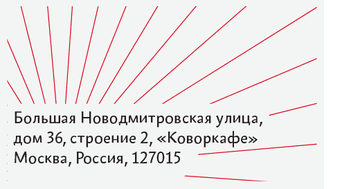
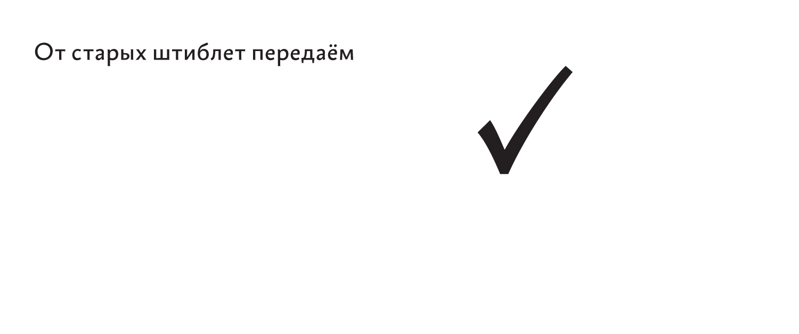
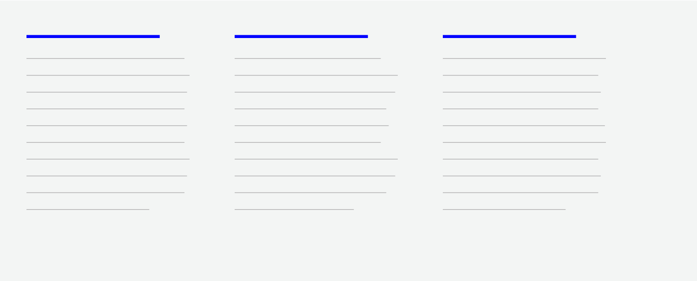

Типографика и вёрстка
Удобно листать не только прокруткой, но и клавишами-стрелками:
между важными местами
Shift
между
разворотами
разворотами
Моему деду — Валерию Горбунову, писателю, газетчику и остроумному человеку
Издано
в Дизайн-бюро
Артёма Горбунова
Артёма Горбунова
Типографика и вёрстка
Типографика и вёрстка
Издательство Бюро Горбунова
2015
Типографика и вёрстка
удк 655.262
ббк 85.15
г67
г67
Типографика и вёрстка. —
М.: Изд-во Бюро Горбунова, 2015
ISBN 978-5-9907024-0-0
Первая книга Издательства Дизайн-бюро Артёма Горбунова — практическое руководство по типографике и вёрстке с акцентом на макетировании для экрана. Учебник предназначен для дизайнеров, редакторов и разработчиков.
К сожалению, из многочисленных книг о типографике и модульных сетках остаётся непонятно, как именно собрать выразительный макет с прочной конструкцией. В лучшем случае дизайнеру остаётся выуживать крупицы смысла и копировать удачные примеры.
«Типографика и вёрстка» последовательно отвечает на вопрос как. Автор вводит принципы модульности и якорных объектов, правило внутреннего и внешнего. Затем шаг за шагом наглядно объясняет, как добиться аккуратной и плотной вёрстки сайтов, сервисов и сми.
УДК 655.262
ББК 85.15
Оглавление
правило внутреннего и внешнего
1
Основы
вёрстки
- правило внутреннего и внешнего
- модульность
- правило якорных объектов
- формат, поля и интерлиньяж
- точка, линия и прямоугольник
- от геометрии к типографике
Правило внутреннего и внешнего
типографы веками искали закономерности и связи между элементами набора: буквами и апрошами, строками и интерлиньяжем, полосой набора и полями. Каждое открытие складывалось в бесконечную копилку правил:
типографы веками искали закономерности и связи между элементами набора: буквами и апрошами, строками и интерлиньяжем, полосой набора и полями. Каждое открытие складывалось в бесконечную копилку правил:
прописные нужно разряжать
строчные нельзя разряжать
вертикальные штрихи строчных и прописных должны стоять через равные промежутки
разрядка прописных должна быть меньше интерлиньяжа
пробел между строками прописных букв не может быть меньше высоты буквы
интерлиньяж должен быть больше межсловных пробелов
при минимальном интерлиньяже нижние выносные элементы строки почти касаются верхних выносных элементов следующей строки
чем длиннее строка, тем больше интерлиньяж
интерлиньяж не должен быть больше внешних полей
элементы списка должны иметь между собой дополнительный отступ больше интерлиньяжа
номер страницы должен стоять ближе к полосе, чем к краю страницы
заголовок в тексте должен стоять ближе к следующему абзацу, чем к предыдущему
расстояние от заголовка до абзаца не должно быть меньше межстрочного интервала заголовка
правило внутреннего и внешнего
Современный дизайнер так и собирает знания по крупицам — из книг, советов коллег, замечаний арт-директора.
Запомнить даже перечисленные правила довольно затруднительно. Если дизайнер и вызубрит собственный набор правил, всегда найдутся такие, о которых он не слышал, — копилка-то бесконечна.
Но одно дело знать огромный свод правил, а другое дело последовательно применять их к каждой части макета. Даже на простенькой странице из заголовка и текста ошибок у новичка найдётся в двадцать раз больше, чем элементов.
Вместо того, чтобы зубрить тысячу правил, я предлагаю дизайнерам запомнить один принцип и научиться последовательно применять его ко всем элементам вёрстки.
«Правило внутреннего и внешнего» — базовый принцип типографики, работающий на всех уровнях от буквы до разворота.
Правило внутреннего и внешнего — это частный случай теории близости. Типографический объект любого уровня состоит из других объектов: буквы из штрихов, слова из букв, строки из слов, абзацы из строк.
И для того чтобы объект имел самостоятельное значение, то есть буква, слово, строка и абзац отделялись от соседних, его внутренние расстояния должны быть меньше внешних.
- Артемий Лебедев. Теория близости
- А. Г. об общей теории близости
правило внутреннего и внешнего
Рассмотрим заголовок из прописных букв.
Штрихи каждой буквы заключают в себе её внутреннее пространство. Пустота внутри буквы П в середине слова больше, чем внешнее расстояние до соседних букв О слева и справа. Из-за этого возникает ощущение, что соседние буквы вторглись в личное пространство друг друга, а вся надпись — слиплась.
Увеличим расстояние между буквами, чтобы изменить соотношение внутреннего и внешнего. Каждая буква обрела значение и независимость, а заголовок — архитектурную торжественность.
Добавим к заголовку слово. Слова отделены между собой пробелом. Для каждого слова расстояние между буквами играет роль «внутреннего», а межсловный пробел — роль «внешнего». Из-за того что пробел лишь немногим больше межбуквенного расстояния, слова слиплись.
Сначала попробуем изменить соотношение внутреннего и внешнего, уменьшив «внутреннее» — разрядку между буквами, но так, чтобы она не стала меньше расстояния между собственными штрихами букв. Всегда держим в голове, что «внутреннее» на одном уровне служит «внешним» на другом.
Пробел остался неизменным, но теперь его достаточно, чтобы отделить слова.
Теперь вместо уменьшения разрядки попробуем отделить слова иначе — переносом на следующую строку. Межстрочный просвет сравним с межбуквенным расстоянием. Из-за этого буквы надписи сливаются в рисунок шахматной доски.
Увеличим «внешнее» — интерлиньяж. Надпись вернула себе имперское достоинство.
А что если не увеличивать интерлиньяж, а изменить шрифт на более узкий?
В узких буквах меньше внутренние просветы, значит, они не требуют такой большой разрядки. При том же кегле и интерлиньяже слова лучше отделились друг от друга. Надпись стала компактнее без ущерба для внутреннего пространства.
Вернёмся к «имперской надписи» и добавим к ней подзаголовок. Подзаголовок «влез в интерлиньяж» заголовка — то есть оказался ближе к нему, чем его собственные строки друг к другу.
Нет проблем, увеличим «внешнее».
Допустим, наш заголовок должен уместиться на табличке фиксированных габаритов. Надпись вступила в конфликт внутреннего и внешнего с собственной рамкой.
Придётся пройтись вниз по всем уровням и уменьшить внутренние расстояния, сохраняя контраст внутреннего и внешнего.
Заметим, что для одного и того же кегля мы получили разные приемлемые соотношения внутренних и внешних расстояний. Контраст важнее конкретного значения пропорции — это даёт гибкость верстальщику. Идеальное «серебро набора» — это лишь минимально возможный контраст внутреннего и внешнего всех элементов для нейтрального спокойного чтения. При увеличении контраста внутреннего и внешнего текст становится заметнее и выразительнее.
Базовое правило типографики:
внутреннее ≤ внешнее
Пустота внутри буквы П в середине слова больше, чем внешнее расстояние до соседних букв О слева и справа
Каждая буква обрела значение и независимость, а заголовок — архитектурную торжественность
Для каждого слова расстояние между буквами играет роль «внутреннего», а межсловный пробел — роль «внешнего»
Пробел остался неизменным, но теперь его достаточно, чтобы отделить слова
Межстрочный просвет сравним с межбуквенным расстоянием. Из-за этого буквы надписи сливаются в рисунок шахматной доски
Надпись вернула себе имперское достоинство
Межстрочный просвет сравним с межбуквенным расстоянием. Из-за этого буквы надписи сливаются в рисунок шахматной доски
Вместо увеличения интерлиньяжа заменим шрифт на узкий
При том же кегле и интерлиньяже слова лучше отделились
Подзаголовок «влез в интерлиньяж» заголовка — то есть оказался ближе к нему, чем его собственные строки друг к другу
Отодвинем подзаголовок на расстояние не меньшее, чем просвет между первыми двумя строками
Надпись вступила в конфликт внутреннего и внешнего с собственной рамкой
Контраст внутреннего и внешнего на всех уровнях — от внутрибуквенных просветов до внешних полей надписи
Модульность
Модульность
главное изобретение человека — не колесо, а прямоугольник. Круг не надо придумывать: посмотрел на небо — висит солнце, бросил камень в озеро — пошли круги. А прямоугольник в природе встречается редко. В самом человеке нет ничего прямоугольного.
Прямоугольник — главная геометрическая фигура цивилизации. Вокруг человека прямоугольники: экран монитора, телефон и кошелёк в кармане, банкноты в кошельке, гитарный гриф, рабочий стол, подушка на диване, диван, книги, шкаф, комната, окна, двери, ступеньки, дорога, фасады.
Прямоугольник получил исключительное значение благодаря способности делиться на любое число прямоугольников любых пропорций.
Прямоугольник делится на другие прямоугольники — и в остатке прямоугольники
Модульность
Существуют особые пропорции и способы деления прямоугольников:
![](data:image/svg+xml;charset=US-ASCII,%3C%3Fxml%20version%3D%221.0%22%20encoding%3D%22utf-8%22%3F%3E%3C!DOCTYPE%20svg%20PUBLIC%20%22-%2F%2FW3C%2F%2FDTD%20SVG%201.1%2F%2FEN%22%20%22http%3A%2F%2Fwww.w3.org%2FGraphics%2FSVG%2F1.1%2FDTD%2Fsvg11.dtd%22%3E%3Csvg%20version%3D%221.1%22%20id%3D%22%D0%A1%D0%BB%D0%BE%D0%B9_1%22%20xmlns%3D%22http%3A%2F%2Fwww.w3.org%2F2000%2Fsvg%22%20xmlns%3Axlink%3D%22http%3A%2F%2Fwww.w3.org%2F1999%2Fxlink%22%20x%3D%220px%22%20y%3D%220px%22%20%20viewBox%3D%220.2%20434.4%203000%202123.4%22%20enable-background%3D%22new%200.2%20434.4%203000%202123.4%22%20xml%3Aspace%3D%22preserve%22%3E%3Crect%20x%3D%22173.6%22%20y%3D%221163.4%22%20fill%3D%22none%22%20stroke%3D%22%23231F20%22%20stroke-width%3D%223%22%20stroke-miterlimit%3D%2210%22%20width%3D%221173.9%22%20height%3D%221175.4%22%2F%3E%3Cpolyline%20fill%3D%22none%22%20stroke%3D%22%23231F20%22%20stroke-width%3D%223%22%20stroke-miterlimit%3D%2210%22%20points%3D%221347.5%2C1751.9%201347.5%2C2338.8%20173.6%2C2338.8%20%20173.6%2C1751.9%20%22%2F%3E%3Crect%20x%3D%22172.9%22%20y%3D%22437.4%22%20fill%3D%22none%22%20stroke%3D%22%23231F20%22%20stroke-width%3D%226%22%20stroke-miterlimit%3D%2210%22%20width%3D%221175.4%22%20height%3D%221900.7%22%2F%3E%3Crect%20x%3D%221651.8%22%20y%3D%22437.4%22%20fill%3D%22none%22%20stroke%3D%22%23231F20%22%20stroke-width%3D%226%22%20stroke-miterlimit%3D%2210%22%20width%3D%221175.4%22%20height%3D%221900.7%22%2F%3E%3Cline%20fill%3D%22none%22%20stroke%3D%22%23231F20%22%20stroke-width%3D%221.298%22%20stroke-linecap%3D%22square%22%20stroke-miterlimit%3D%2210%22%20x1%3D%221348.1%22%20y1%3D%221751.7%22%20x2%3D%22173%22%20y2%3D%221164.2%22%2F%3E%3Crect%20x%3D%221652.6%22%20y%3D%221612.1%22%20fill%3D%22none%22%20stroke%3D%22%23231F20%22%20stroke-miterlimit%3D%2210%22%20width%3D%221173.9%22%20height%3D%22726.8%22%2F%3E%3Cg%20enable-background%3D%22new%20%20%20%20%22%3E%20%3Cpath%20d%3D%22M528.6%2C2490.6l-3.9-1.3c2.7-11.8%2C11.2-20.5%2C23.8-20.5c11.2%2C0%2C31.6%2C10.4%2C41.7%2C10.4c8.3%2C0%2C14.4-6.9%2C18.2-14.8l3.9%2C1.3%20%20c-2.7%2C11.8-11.2%2C21.5-23.8%2C21.5c-11.2%2C0-32.3-10.4-41.7-10.4C538.4%2C2476.9%2C532.4%2C2482.9%2C528.6%2C2490.6z%20M528.6%2C2514.8l-3.9-1.3%20%20c2.7-11.8%2C11.2-20.5%2C23.8-20.5c11.2%2C0%2C31.6%2C10.4%2C41.7%2C10.4c8.3%2C0%2C14.4-6.9%2C18.2-14.8l3.9%2C1.3c-2.7%2C11.8-11.2%2C21.5-23.8%2C21.5%20%20c-11.2%2C0-32.3-10.4-41.7-10.4C538.4%2C2501.1%2C532.4%2C2507.2%2C528.6%2C2514.8z%22%2F%3E%20%3Cpath%20d%3D%22M683.9%2C2533.1h-41v-5.2h15.6v-61.2c0-4.3-1.1-5.7-3.5-5.7c-2.8%2C0-6.5%2C1.2-13.2%2C2.4l-0.9-4.6c21.9-5.4%2C23.7-16.4%2C25.4-16.4%20%20c0.9%2C0%2C3.4%2C0.5%2C3.4%2C2v83.4h14.3V2533.1z%22%2F%3E%20%3Cpath%20d%3D%22M712.2%2C2475.7c4.6%2C0%2C7.9%2C4.2%2C7.9%2C8.1c0%2C4.8-5%2C8.6-9.2%2C8.6c-4.3%2C0-7.9-3.9-7.9-7.8C703%2C2480.1%2C707.4%2C2475.7%2C712.2%2C2475.7z%20%20%20M712.2%2C2518.5c4.6%2C0%2C7.9%2C4.2%2C7.9%2C8.1c0%2C4.8-5%2C8.6-9.2%2C8.6c-4.3%2C0-7.9-3.9-7.9-7.8C703%2C2522.9%2C707.4%2C2518.5%2C712.2%2C2518.5z%22%2F%3E%20%3Cpath%20d%3D%22M780.7%2C2533.1h-41v-5.2h15.6v-61.2c0-4.3-1.1-5.7-3.5-5.7c-2.8%2C0-6.5%2C1.2-13.2%2C2.4l-0.9-4.6c21.9-5.4%2C23.7-16.4%2C25.4-16.4%20%20c0.9%2C0%2C3.4%2C0.5%2C3.4%2C2v83.4h14.3V2533.1z%22%2F%3E%20%3Cpath%20d%3D%22M794.9%2C2554.4c5.5-3.2%2C10.6-8.3%2C10.6-15.3c0-9.6-12.1-4.8-12.1-12.7c0-3.6%2C3.9-8.1%2C7.8-8.1c7.8%2C0%2C12.8%2C7.4%2C12.8%2C14.8%20%20c0%2C12.5-9%2C21.5-17.2%2C24.6L794.9%2C2554.4z%22%2F%3E%20%3Cpath%20d%3D%22M844.6%2C2490.1l-1.7-3.2c3-2.7%2C7.8-5.9%2C15.2-5.9c12.9%2C0%2C20.6%2C9.7%2C20.6%2C22.7c0%2C18.3-13.3%2C31.4-27.9%2C31.4%20%20c-12.7%2C0-25.2-11-25.2-31.4c0-28.1%2C17.4-54.1%2C45.4-61.2l1.2%2C3.2c-25.8%2C12.7-34.7%2C36.2-34.7%2C57.3c0%2C16.4%2C5.7%2C26.5%2C14.8%2C26.5%20%20c9%2C0%2C14.4-10%2C14.4-20.9c0-10.8-4.3-19.8-15.6-19.8C848.6%2C2488.9%2C846.6%2C2489.3%2C844.6%2C2490.1z%22%2F%3E%20%3Cpath%20d%3D%22M936.1%2C2533.1h-41v-5.2h15.6v-61.2c0-4.3-1.1-5.7-3.5-5.7c-2.8%2C0-6.5%2C1.2-13.2%2C2.4l-0.9-4.6c21.9-5.4%2C23.7-16.4%2C25.4-16.4%20%20c0.9%2C0%2C3.4%2C0.5%2C3.4%2C2v83.4h14.3V2533.1z%22%2F%3E%20%3Cpath%20d%3D%22M950.2%2C2513.5c0-12.4%2C9.3-20.9%2C19.8-27.5c-8.1-5.5-14.4-11.8-14.4-21.9c0-11.4%2C10.4-21.7%2C23.3-21.7%20%20c13.1%2C0%2C20.2%2C8.2%2C20.2%2C17.9c0%2C9.3-5%2C15.3-15.5%2C22.2c10.6%2C6.7%2C18.8%2C15.1%2C18.8%2C26.2c0%2C15.9-13.2%2C26.2-28%2C26.2%20%20C963.2%2C2535%2C950.2%2C2529.8%2C950.2%2C2513.5z%20M991%2C2512c0-8.9-5.8-16.4-16.8-23.3h-0.1c-7.1%2C5.4-12.4%2C13.1-12.4%2C22.7%20%20c0%2C10.8%2C5.5%2C18%2C14.3%2C18C985.6%2C2529.5%2C991%2C2522.2%2C991%2C2512z%20M979.4%2C2480c7.9-6.5%2C8.7-13.6%2C8.7-18.7c0-6.7-3.1-13.6-10.5-13.6%20%20c-7.5%2C0-10.8%2C6.6-10.8%2C13.5C966.9%2C2470.3%2C971.8%2C2475%2C979.4%2C2480z%22%2F%3E%3C%2Fg%3E%3Cpath%20fill%3D%22none%22%20stroke%3D%22%23231F20%22%20stroke-width%3D%221.2976%22%20stroke-miterlimit%3D%2210%22%20d%3D%22M172.9%2C1164c215.8-430.5%2C661-726%2C1175.4-726%22%2F%3E%3Cline%20fill%3D%22none%22%20stroke%3D%22%23231F20%22%20stroke-width%3D%223%22%20stroke-miterlimit%3D%2210%22%20x1%3D%22172.9%22%20y1%3D%221163.4%22%20x2%3D%221346.8%22%20y2%3D%221163.4%22%2F%3E%3Cline%20fill%3D%22none%22%20stroke%3D%22%23231F20%22%20stroke-width%3D%223%22%20stroke-miterlimit%3D%2210%22%20x1%3D%22172.9%22%20y1%3D%221751.1%22%20x2%3D%221348.3%22%20y2%3D%221751.1%22%2F%3E%3Cline%20fill%3D%22none%22%20stroke%3D%22%23231F20%22%20stroke-miterlimit%3D%2210%22%20x1%3D%221653.3%22%20y1%3D%221612.1%22%20x2%3D%222827.3%22%20y2%3D%221612.1%22%2F%3E%3Cline%20fill%3D%22none%22%20stroke%3D%22%23231F20%22%20stroke-miterlimit%3D%2210%22%20x1%3D%222377.7%22%20y1%3D%221612.5%22%20x2%3D%222377.7%22%20y2%3D%222338.4%22%2F%3E%3Cline%20fill%3D%22none%22%20stroke%3D%22%23231F20%22%20stroke-miterlimit%3D%2210%22%20x1%3D%222377.7%22%20y1%3D%222062.6%22%20x2%3D%222826.4%22%20y2%3D%222062.6%22%2F%3E%3Cline%20fill%3D%22none%22%20stroke%3D%22%23231F20%22%20stroke-miterlimit%3D%2210%22%20x1%3D%222654.5%22%20y1%3D%222062.9%22%20x2%3D%222654.5%22%20y2%3D%222339.6%22%2F%3E%3Cline%20fill%3D%22none%22%20stroke%3D%22%23231F20%22%20stroke-width%3D%221.0022%22%20stroke-miterlimit%3D%2210%22%20x1%3D%222654.4%22%20y1%3D%222233.1%22%20x2%3D%222827.1%22%20y2%3D%222233.1%22%2F%3E%3C%2Fsvg%3E)
![](data:image/svg+xml;charset=US-ASCII,%3C%3Fxml%20version%3D%221.0%22%20encoding%3D%22utf-8%22%3F%3E%3C!DOCTYPE%20svg%20PUBLIC%20%22-%2F%2FW3C%2F%2FDTD%20SVG%201.1%2F%2FEN%22%20%22http%3A%2F%2Fwww.w3.org%2FGraphics%2FSVG%2F1.1%2FDTD%2Fsvg11.dtd%22%3E%3Csvg%20version%3D%221.1%22%20id%3D%22%D0%A1%D0%BB%D0%BE%D0%B9_1%22%20xmlns%3D%22http%3A%2F%2Fwww.w3.org%2F2000%2Fsvg%22%20xmlns%3Axlink%3D%22http%3A%2F%2Fwww.w3.org%2F1999%2Fxlink%22%20x%3D%220px%22%20y%3D%220px%22%20%20viewBox%3D%220.2%20434.4%203000%202123.4%22%20enable-background%3D%22new%200.2%20434.4%203000%202123.4%22%20xml%3Aspace%3D%22preserve%22%3E%3Crect%20x%3D%221653.3%22%20y%3D%22437.4%22%20fill%3D%22none%22%20stroke%3D%22%23231F20%22%20stroke-width%3D%226%22%20stroke-miterlimit%3D%2210%22%20width%3D%221344.1%22%20height%3D%221903.1%22%2F%3E%3Crect%20x%3D%221654.1%22%20y%3D%22436.7%22%20fill%3D%22none%22%20stroke%3D%22%23231F20%22%20stroke-miterlimit%3D%2210%22%20width%3D%221344.1%22%20height%3D%22954.5%22%2F%3E%3Crect%20x%3D%223.4%22%20y%3D%22437.4%22%20fill%3D%22none%22%20stroke%3D%22%23231F20%22%20stroke-width%3D%226%22%20stroke-miterlimit%3D%2210%22%20width%3D%221345.6%22%20height%3D%221903.1%22%2F%3E%3Cline%20fill%3D%22none%22%20stroke%3D%22%23231F20%22%20stroke-width%3D%221.298%22%20stroke-miterlimit%3D%2210%22%20x1%3D%221349.3%22%20y1%3D%222340.7%22%20x2%3D%223.4%22%20y2%3D%22995.1%22%2F%3E%3Cpath%20fill%3D%22none%22%20stroke%3D%22%23231F20%22%20stroke-width%3D%221.298%22%20stroke-miterlimit%3D%2210%22%20d%3D%22M3.4%2C1000.8C347.8%2C656.4%2C823.6%2C443.4%2C1349%2C443.4%20%22%2F%3E%3Cg%20enable-background%3D%22new%20%20%20%20%22%3E%20%3Cpath%20d%3D%22M1739.8%2C542.8c-5.9-0.3-17.5%2C0-24%2C0c-3.3%2C9.2-6.4%2C17.7-7.9%2C22.4h-9.7c6.9-16.4%2C21.8-56.8%2C24.7-66h10.1%20%20c0.9%2C4.6%2C18.5%2C49.5%2C24.7%2C66h-9.8C1745.9%2C559.6%2C1743%2C551.4%2C1739.8%2C542.8z%20M1718.5%2C535.2h18.6c-3.5-9.3-6.8-18.4-9.1-24.5h-0.4%20%20C1725.3%2C516.7%2C1721.9%2C525.8%2C1718.5%2C535.2z%22%2F%3E%20%3Cpath%20d%3D%22M1805.4%2C530.9c0%2C17.9-6.3%2C35.8-22%2C35.8c-14.9%2C0-21.1-15.4-21.1-33c0-21.4%2C7.3-35.8%2C22.4-35.8%20%20C1799.3%2C497.9%2C1805.4%2C511.7%2C1805.4%2C530.9z%20M1771.1%2C532.5c0%2C16.1%2C3.2%2C25.9%2C12.5%2C25.9c8.9%2C0%2C12.9-10.5%2C12.8-26.3%20%20c-0.1-16.1-2.7-25.9-12.3-25.9C1774.7%2C506.2%2C1771.1%2C516.8%2C1771.1%2C532.5z%22%2F%3E%3C%2Fg%3E%3Cg%20enable-background%3D%22new%20%20%20%20%22%3E%20%3Cpath%20d%3D%22M1739.8%2C1488.6c-5.9-0.3-17.5%2C0-24%2C0c-3.3%2C9.2-6.4%2C17.7-7.9%2C22.4h-9.7c6.9-16.4%2C21.8-56.8%2C24.7-66h10.1%20%20c0.9%2C4.6%2C18.5%2C49.5%2C24.7%2C66h-9.8C1745.9%2C1505.5%2C1743%2C1497.2%2C1739.8%2C1488.6z%20M1718.5%2C1481h18.6c-3.5-9.3-6.8-18.4-9.1-24.5h-0.4%20%20C1725.3%2C1462.4%2C1721.9%2C1471.6%2C1718.5%2C1481z%22%2F%3E%20%3Cpath%20d%3D%22M1802.1%2C1511.1h-39l-1.2-5.2c9.2-7.3%2C31.7-27.5%2C31.7-41.9c0-8.8-5.5-11.9-11.5-11.9c-5.5%2C0-9.8%2C2.3-12.9%2C5.5l-4.4-5.1%20%20c2.6-3.9%2C9.1-8.8%2C19.4-8.8c12%2C0%2C18.5%2C7.5%2C18.5%2C18.4c0%2C14.9-17%2C32.7-27.2%2C41.2l0.2%2C0.4c6.4%2C0%2C21.8-0.8%2C28.8-2.4L1802.1%2C1511.1z%22%2F%3E%3C%2Fg%3E%3Cg%20enable-background%3D%22new%20%20%20%20%22%3E%20%3Cpath%20d%3D%22M1757.3%2C1298.7c-0.3%2C5.9%2C0%2C17.5%2C0%2C24c9.2%2C3.3%2C17.7%2C6.4%2C22.5%2C7.9v9.7c-16.4-6.9-56.8-21.8-66-24.7v-10.1%20%20c4.6-0.9%2C49.5-18.5%2C66-24.7v9.8C1774.1%2C1292.7%2C1765.9%2C1295.5%2C1757.3%2C1298.7z%20M1749.7%2C1320.1v-18.6c-9.3%2C3.5-18.4%2C6.8-24.5%2C9.1v0.4%20%20C1731.2%2C1313.2%2C1740.3%2C1316.6%2C1749.7%2C1320.1z%22%2F%3E%20%3Cpath%20d%3D%22M1779.8%2C1269.6h-7.1c0.1-3%2C0.2-7.8%2C0.2-12.8h-41.4c-1.9%2C0-3.9%2C0-4.9-0.2c2.2%2C3.3%2C3.4%2C10.5%2C2.9%2C15.1l-5.5%2C1%20%20c-0.4-2.6-1.6-8.3-4-12.9c-2.1-4-5.7-7.9-7.6-9.3l1.5-2.9c5.2%2C0.4%2C11.6%2C0.3%2C18.2%2C0.3h23.8c6.1%2C0%2C11.9-0.1%2C17-0.4%20%20c-0.1-5.5-0.1-10.3-0.3-11.9h7.1L1779.8%2C1269.6L1779.8%2C1269.6z%22%2F%3E%3C%2Fg%3E%3Cg%20enable-background%3D%22new%20%20%20%20%22%3E%20%3Cpath%20d%3D%22M2413%2C1965.8c-5.9-0.3-17.5%2C0-24%2C0c-3.3%2C9.2-6.4%2C17.7-7.9%2C22.5h-9.7c6.9-16.4%2C21.8-56.8%2C24.7-66h10.1%20%20c0.9%2C4.6%2C18.5%2C49.5%2C24.7%2C66h-9.8C2419.1%2C1982.6%2C2416.2%2C1974.4%2C2413%2C1965.8z%20M2391.7%2C1958.2h18.6c-3.5-9.3-6.8-18.4-9.1-24.5h-0.4%20%20C2398.6%2C1939.6%2C2395.2%2C1948.9%2C2391.7%2C1958.2z%22%2F%3E%20%3Cpath%20d%3D%22M2470%2C1971.5c0.2%2C6.4%2C0.6%2C12.4%2C0.9%2C16.8h-9.1v-16.8h-28l-1.2-3.4c8.2-11.7%2C29.9-40.3%2C33.7-47.2l4.2%2C1.5%20%20c-0.5%2C5.1-0.4%2C13-0.4%2C19.6l-0.2%2C21.2c0%2C0.3%2C0%2C0.6%2C0%2C0.8c3.4-0.1%2C6.7-0.3%2C9.6-0.5v8H2470L2470%2C1971.5z%20M2461.7%2C1964.3V1940l-0.4-0.2%20%20c-4.8%2C7-11.7%2C16.6-17%2C24.2l0.2%2C0.4C2449.6%2C1964.5%2C2455.7%2C1964.5%2C2461.7%2C1964.3z%22%2F%3E%3C%2Fg%3E%3Cg%20enable-background%3D%22new%20%20%20%20%22%3E%20%3Cpath%20d%3D%22M2421.2%2C1776c-0.3%2C5.9%2C0%2C17.5%2C0%2C24c9.2%2C3.3%2C17.7%2C6.4%2C22.5%2C7.9v9.7c-16.4-6.9-56.8-21.8-66-24.7v-10.1%20%20c4.6-0.9%2C49.5-18.5%2C66-24.7v9.8C2437.9%2C1769.9%2C2429.7%2C1772.8%2C2421.2%2C1776z%20M2413.5%2C1797.3v-18.5c-9.3%2C3.5-18.4%2C6.8-24.6%2C9.1v0.4%20%20C2394.9%2C1790.3%2C2404.1%2C1793.8%2C2413.5%2C1797.3z%22%2F%3E%20%3Cpath%20d%3D%22M2376.3%2C1732.8c0-8.8%2C5.5-15.4%2C13.3-15.4c8.4%2C0%2C12.7%2C5.8%2C15.2%2C12.1l0.5-0.2c0-5.8%2C4-15.8%2C16.2-15.8%20%20c14.6%2C0%2C23.5%2C13.1%2C23.5%2C34.1l-7.4%2C2.5c-0.1-13.9-3.9-27.6-15.3-27.6c-9.9%2C0-12.8%2C11.7-10.8%2C19.7l-6.8%2C1.4%20%20c-2.3-9.3-6-17.1-13.4-17.1c-4.5%2C0-7.2%2C3-7.2%2C8.2c0%2C5.5%2C2.2%2C8.1%2C3.9%2C10.7l-4.8%2C4.1C2379.8%2C1746.4%2C2376.3%2C1740.8%2C2376.3%2C1732.8z%22%2F%3E%3C%2Fg%3E%3Cg%20enable-background%3D%22new%20%20%20%20%22%3E%20%3Cpath%20d%3D%22M2730.3%2C2192.6c-5.9-0.3-17.5%2C0-24%2C0c-3.3%2C9.2-6.4%2C17.7-7.9%2C22.5h-9.7c6.9-16.4%2C21.8-56.8%2C24.7-66h10.1%20%20c0.9%2C4.6%2C18.5%2C49.5%2C24.7%2C66h-9.8C2736.4%2C2209.4%2C2733.5%2C2201.2%2C2730.3%2C2192.6z%20M2708.9%2C2184.9h18.6c-3.5-9.3-6.8-18.4-9.1-24.5h-0.4%20%20C2715.9%2C2166.4%2C2712.4%2C2175.6%2C2708.9%2C2184.9z%22%2F%3E%20%3Cpath%20d%3D%22M2753.8%2C2190c0-20%2C12.5-38.5%2C34.8-42.3l2.1%2C6.4c-15.2%2C4.5-24.9%2C11.8-27.5%2C27.1h0.5c1.7-2%2C5.8-5.9%2C13.9-5.9%20%20c11.7%2C0%2C17.5%2C7.9%2C17.5%2C18.5c0%2C12.3-8.3%2C22.6-20.5%2C22.6C2762.1%2C2216.5%2C2753.8%2C2205.8%2C2753.8%2C2190z%20M2786.8%2C2195.1%20%20c0-7.8-4.9-12.4-11.7-12.4c-7.1%2C0-10.9%2C4.3-12.5%2C6.9c0%2C0.2%2C0%2C0.5%2C0%2C0.7c0%2C12.1%2C4.8%2C18.8%2C12.6%2C18.8%20%20C2782%2C2209.1%2C2786.8%2C2203.3%2C2786.8%2C2195.1z%22%2F%3E%3C%2Fg%3E%3Cg%20enable-background%3D%22new%20%20%20%20%22%3E%20%3Cpath%20d%3D%22M2747.8%2C2013.9c-0.3%2C5.9%2C0%2C17.5%2C0%2C24c9.2%2C3.3%2C17.7%2C6.4%2C22.5%2C7.9v9.7c-16.4-6.9-56.8-21.8-66-24.7v-10.1%20%20c4.6-0.9%2C49.5-18.5%2C66-24.7v9.8C2764.6%2C2007.8%2C2756.4%2C2010.7%2C2747.8%2C2013.9z%20M2740.2%2C2035.1v-18.6c-9.3%2C3.5-18.4%2C6.8-24.6%2C9.1v0.4%20%20C2721.6%2C2028.2%2C2730.8%2C2031.6%2C2740.2%2C2035.1z%22%2F%3E%20%3Cpath%20d%3D%22M2729.6%2C1987.2l-25.3-4.9v-30.9l8.6%2C1.9c-0.5%2C6-1%2C15.6-1.2%2C22.1l10.6%2C2.1c0.7-12.2%2C7.9-23.7%2C21.1-23.7%20%20c14.2%2C0%2C27%2C9.6%2C28.3%2C31.3l-6.9%2C2.4c-2.2-15.9-8.7-24.4-20-24.4C2732.4%2C1963%2C2729.6%2C1973.8%2C2729.6%2C1987.2z%22%2F%3E%3C%2Fg%3E%3Cg%20enable-background%3D%22new%20%20%20%20%22%3E%20%3Cpath%20d%3D%22M595%2C2535.4h-41.1v-5.2h15.5v-61.3c0-4.3-1.1-5.7-3.5-5.7c-2.8%2C0-6.5%2C1.2-13.2%2C2.4l-0.9-4.6c21.9-5.4%2C23.7-16.4%2C25.5-16.4%20%20c0.9%2C0%2C3.4%2C0.5%2C3.4%2C2v83.6H595V2535.4z%22%2F%3E%20%3Cpath%20d%3D%22M623.3%2C2477.7c4.6%2C0%2C7.9%2C4.2%2C7.9%2C8.1c0%2C4.8-5%2C8.6-9.2%2C8.6c-4.3%2C0-7.9-3.9-7.9-7.8C614.2%2C2482.3%2C618.6%2C2477.7%2C623.3%2C2477.7z%20%20%20M623.3%2C2520.6c4.6%2C0%2C7.9%2C4.2%2C7.9%2C8.1c0%2C4.8-5%2C8.6-9.2%2C8.6c-4.3%2C0-7.9-3.9-7.9-7.8C614.2%2C2525.1%2C618.6%2C2520.6%2C623.3%2C2520.6z%22%2F%3E%20%3Cpath%20d%3D%22M674.4%2C2545.4l-10.5-60.4h-9.7v-5.2h21.7l7%2C46.7h0.5l53.8-115.5h74.5v5.2h-69.8l-61.1%2C129.4h-6.3v-0.2H674.4z%22%2F%3E%20%3Cpath%20d%3D%22M790%2C2535.4h-49.6l-0.8-3c19.1-15.1%2C39.5-40.2%2C39.5-60.3c0-10.1-4.8-17.5-14.4-17.5c-10%2C0-15.2%2C6.9-18.6%2C12.4l-2.8-1.3%20%20c1.6-9.3%2C10.4-21.1%2C25.7-21.1c14%2C0%2C22.2%2C10%2C22.2%2C21.9c0%2C24.4-22.9%2C44.4-36.8%2C60.7l0.3%2C0.5l18.6-1.2c9.8-0.7%2C17.2-2.6%2C20.9-10%20%20l2.7%2C1.2L790%2C2535.4z%22%2F%3E%3C%2Fg%3E%3Cline%20fill%3D%22none%22%20stroke%3D%22%23231F20%22%20stroke-width%3D%223%22%20stroke-miterlimit%3D%2210%22%20x1%3D%223.4%22%20y1%3D%22994.1%22%20x2%3D%221349.1%22%20y2%3D%22994.1%22%2F%3E%3Cline%20fill%3D%22none%22%20stroke%3D%22%23231F20%22%20stroke-miterlimit%3D%2210%22%20x1%3D%221653.3%22%20y1%3D%221391.6%22%20x2%3D%222997.4%22%20y2%3D%221391.6%22%2F%3E%3Cline%20fill%3D%22none%22%20stroke%3D%22%23231F20%22%20stroke-width%3D%221.0004%22%20stroke-miterlimit%3D%2210%22%20x1%3D%222325.4%22%20y1%3D%221391.6%22%20x2%3D%222325.4%22%20y2%3D%222341%22%2F%3E%3Cline%20fill%3D%22none%22%20stroke%3D%22%23231F20%22%20stroke-width%3D%220.9994%22%20stroke-miterlimit%3D%2210%22%20x1%3D%222325.4%22%20y1%3D%221865.2%22%20x2%3D%222997.4%22%20y2%3D%221865.2%22%2F%3E%3Cline%20fill%3D%22none%22%20stroke%3D%22%23231F20%22%20stroke-width%3D%221.0008%22%20stroke-miterlimit%3D%2210%22%20x1%3D%222659.5%22%20y1%3D%221865.2%22%20x2%3D%222659.5%22%20y2%3D%222341%22%2F%3E%3Cline%20fill%3D%22none%22%20stroke%3D%22%23231F20%22%20stroke-width%3D%220.9989%22%20stroke-miterlimit%3D%2210%22%20x1%3D%222659.5%22%20y1%3D%222103.5%22%20x2%3D%222997.4%22%20y2%3D%222103.5%22%2F%3E%3Cline%20fill%3D%22none%22%20stroke%3D%22%23231F20%22%20stroke-width%3D%221.0016%22%20stroke-miterlimit%3D%2210%22%20x1%3D%222828.9%22%20y1%3D%222103.5%22%20x2%3D%222828.9%22%20y2%3D%222341%22%2F%3E%3C%2Fsvg%3E)
Например, прямоугольник с пропорциями «золотого сечения» отсекается квадратом из другого прямоугольника с «золотым сечением». И так до бесконечности
А прямоугольник c длинной стороной, равной диагонали квадрата с его короткой стороной, воспроизводится в меньшем размере при делении пополам. Это свойство в основе линейки форматов бумаги ДИН
Модульность
Прямой угол — угол между вертикалью и горизонталью, двумя главными направлениями гравитации. Поэтому прямоугольник сразу нашёл применение в архитектуре. Египетские пирамиды и византийские крепости построены из прямоугольных кирпичей и обработанных каменных блоков. Деревянные дома сделаны из прямоугольных столбов и досок или сложены из круглых брёвен, — но прямоугольных в проекции.
Прямоугольник не только держит крышу над головой, но и определяет планировку здания. Колонны сводов европейской архитектуры образуют прямоугольную сетку, внутренние помещения почти всегда прямоугольны.
Японский коврик «татами» — прямоугольник с пропорциями двух квадратов. Татами вмещает двух сидящих или одного спящего человека, но со временем полы комнат стали покрывать целиком, укладывая маты в разных комбинациях.
Повсеместное производство татами привело к стандартизации их размеров. А стандартизация татами привела к особой системе мер и пропорций всего японского дома. Это пример модульного дизайна в архитектуре.
Конфигурация татами в типовых комнатах. Показан тон текстуры циновок при падении света слева.
Хайно Энгель. Параметры и конструкция японского дома
Хайно Энгель. Параметры и конструкция японского дома
Модульность
С изобретением письменности и бумаги прямоугольники пришли в книгоиздание. Книги, страницы и текст прямоугольны:

Галилео Галилей. Звездный вестник. Венеция, 1610
Нематериальная информация получила физическую прямоугольную форму — «флетланд» в терминологии Эдварда Тафти.
В 20 веке типографы придумали делить страницу на невидимые прямоугольники — изобрели модульную сетку.
Вариации макетов по модульной сетке из 32 ячеек.
Йозеф Мюллер-Брокман. Модульные системы в графическом дизайне
Йозеф Мюллер-Брокман. Модульные системы в графическом дизайне
Модульность
Новая компания. № 12, 1974
Типографический ежемесячник. № 1, 1964
Последователи швейцарской типографики загоняли заголовки, колонки текста и иллюстрации в одинаковые прямоугольники без разбора.
Унифицировали размеры не только иллюстраций, но даже их частей.
Модульность
«Прямоугольниками» выступают не только элементы вёрстки, но и пространство между ними. Дизайнер Сергей Серов пишет о швейцарской типографике:
«Здесь мы экономим по будням, гуляем по праздникам. Накапливаем серый тон в одном месте, собираем по полпунктика на каждой строчке — выстреливаем чёрно-белым в другом. Создаем спуск для рубрики, выделяем специальное белое поле для заголовка, подзаголовка, подрисунка или какого-либо другого типографического элемента, и это автоматически придаёт такому элементу исключительную визуальную значимость».
Разворот газеты «Ди Цайт»
Модульность
Сайты и экранные интерфейсы состоят из разнокалиберных элементов: навигационных шапок, меню, кнопок, иконок, панелей инструментов, лент новостей, тизеров, форм ввода, виджетов и плашек. Тексты выводятся из базы данных и имеют непредсказуемую длину. Попытки впихнуть современное экранное издание в квадратно-гнездовую систему швейцарских модульных сеток выглядят натужно и формально, как на сайте «Модульная система».
Аккуратно организовать информацию помогает гибкая модульная вёрстка. Принцип: макет должен быть «нарезан» на аккуратные непересекающиеся прямоугольные модули. Например, как на обложке электронного журнала «Главбух».
Модули не должны пересекаться и налезать друг на друга. Они должны иметь прямоугольную форму, согласовываться друг с другом по ширине и высоте и составлять вместе общий прямоугольник страницы или экрана. Необязательно полностью заполнять модули информацией — главное, чтобы прямоугольники читались. В вёрстке полноправно участвует пустота, или контрпространство, которое также должно иметь простую прямоугольную форму. Элементы вёрстки в модулях должны следовать правилу якорных объектов.
Модульная вёрстка — это деление
прямоугольников
Версия дизайна сайта «Модульная система».
Элементы не попадают в ячейки сетки
Элементы не попадают в ячейки сетки
Обложка электронного журнала «Главбух»
Правило якорных объектов
Правило якорных объектов
якорные объекты — это самые заметные объекты на странице: иллюстрации, заголовки, фактоиды, логотипы и пиктограммы. Простой абзац наборного текста тоже выступает якорным объектом, если он окружён пустотой, или контрпространством.
Прямоугольник — базовая фигура модульной вёрстки. Все модули макета должны иметь прямоугольную форму и составлять вместе общий прямоугольник страницы или экрана, которым они ограничены.
Правило гласит, что любой якорный объект должен тяготеть или располагаться в одном из углов или в визуальном центре своего прямоугольника.
Визуальный центр выше геометрического для подсознательной компенсации гравитации
Правило якорных объектов
Каждый из прямоугольников справа годится.
Принцип требует, чтобы привязка к силовой точке была очевидной. Для этого с противоположных сторон от якорного объекта должны быть «воздух» контрпространства либо менее плотные и заметные объекты.
По моим наблюдениям, самая частая ошибка новичка — забыть «воздух».
У правого края флагового набора всегда должно быть дополнительное свободное пространство. Тогда «флаг» выглядит флагом — как положено.
В жизни редко приходится верстать страницу из одного объекта. Второстепенные объекты модуля пристраиваются к якорным и иногда даже слегка сдвигают их из точек привязки.
Объекты нанизываются друг на друга, как бусы. Общая конструкция сохранится, если соблюдать принцип модульности, то есть выравнивать объекты друг с другом по ширине и высоте и сохранять прямоугольную форму модулей.
Но якорные объекты всегда выпрыгивают из вёрстки. Если у них не будет точки привязки, макет развалится.
Объект может неожиданно стать якорным, то есть более заметным, не только при увеличении размеров, но и при смене цвета.
Якорные объекты тяготеют к одному из углов или к визуальному центру своего прямоугольника

Привязка якорных объектов очевидна, если с противоположных сторон есть «воздух»
Обратите внимание, как угловой привязке крупной галочки мешает её собственная форма
Второстепенные объекты модуля пристраиваются к якорным и сдвигают их из точек привязки
Общая конструкция сохранится, если соблюдать принцип модульности

Макет развалился

Заголовок и иконка стали менее контрастными, а галочка и адрес — якорными объектами
Правило якорных объектов
![](data:image/svg+xml;charset=US-ASCII,%3C%3Fxml%20version%3D%221.0%22%20encoding%3D%22utf-8%22%3F%3E%3C!DOCTYPE%20svg%20PUBLIC%20%22-%2F%2FW3C%2F%2FDTD%20SVG%201.1%2F%2FEN%22%20%22http%3A%2F%2Fwww.w3.org%2FGraphics%2FSVG%2F1.1%2FDTD%2Fsvg11.dtd%22%3E%3Csvg%20version%3D%221.1%22%20id%3D%22%D0%A1%D0%BB%D0%BE%D0%B9_1%22%20xmlns%3D%22http%3A%2F%2Fwww.w3.org%2F2000%2Fsvg%22%20xmlns%3Axlink%3D%22http%3A%2F%2Fwww.w3.org%2F1999%2Fxlink%22%20x%3D%220px%22%20y%3D%220px%22%20%20viewBox%3D%22750%201031.3%201500%20937.4%22%20enable-background%3D%22new%20750%201031.3%201500%20937.4%22%20xml%3Aspace%3D%22preserve%22%3E%3Cg%3E%20%3Crect%20x%3D%22750%22%20y%3D%221031.3%22%20fill%3D%22%23F3F5F4%22%20width%3D%221500%22%20height%3D%22937.4%22%2F%3E%3C%2Fg%3E%3Cline%20fill%3D%22none%22%20stroke%3D%22%23E30016%22%20stroke-width%3D%221.5002%22%20stroke-miterlimit%3D%2210%22%20x1%3D%22828%22%20y1%3D%221083.3%22%20x2%3D%222172%22%20y2%3D%221083.3%22%2F%3E%3Cline%20fill%3D%22none%22%20stroke%3D%22%23E30016%22%20stroke-width%3D%221.5002%22%20stroke-miterlimit%3D%2210%22%20x1%3D%22820.4%22%20y1%3D%221916.7%22%20x2%3D%222172%22%20y2%3D%221916.7%22%2F%3E%3Cline%20fill%3D%22none%22%20stroke%3D%22%23E30016%22%20stroke-width%3D%221.5002%22%20stroke-miterlimit%3D%2210%22%20x1%3D%22802%22%20y1%3D%221890.4%22%20x2%3D%22802%22%20y2%3D%221109.3%22%2F%3E%3Cline%20fill%3D%22none%22%20stroke%3D%22%23E30016%22%20stroke-width%3D%221.5002%22%20stroke-miterlimit%3D%2210%22%20x1%3D%222198%22%20y1%3D%221890.7%22%20x2%3D%222198%22%20y2%3D%221109.3%22%2F%3E%3C%2Fsvg%3E)

Якорный объект может быть привязан не к точке, а к одной из сторон прямоугольника.
Такая привязка выглядит спокойно.
Правило якорных объектов
Хорошая вёрстка использует силу углов и сторон формата. На обратной стороне коробок картриджей Т2 якорные объекты активируют верхние углы и нижнюю сторону:
Якорные объекты образуют иерархию: первыми замечают иллюстрации и любые картинки, затем крупные заголовки, далее логотипы, знаки и цифры. Наборный текст — самый нейтральный. В качестве упражнения предлагаю читателям самостоятельно разобрать принцип якорных объектов на примерах справа.


Применение модульности и якорных объектов
Применение модульности и якорных объектов
в рубрику «советы» на сайте бюро обратился Андрей Коржиц с просьбой помочь улучшить афишу:
«Хотелось бы узнать ваши замечания по размещению текстовой информации. Использовалось три кегля (не считая официальной обязательной надписи внизу восьмым кеглем) и две гарнитуры».
Афиша
Андрея
Коржица
Андрея
Коржица
Применение модульности и якорных объектов
В прошлой главе мы объявили, что все блоки — модули макета — должны иметь прямоугольную форму и составлять вместе общий прямоугольник страницы или экрана, которым они ограничены. Это не значит, что любой макет должен быть заполнен информацией, как ванная комната плиткой — главное, чтобы прямоугольники читались. В вёрстке полноправно участвует пустота, или контрпространство, а элементы вёрстки в модулях должны следовать правилу якорных объектов.
Макет устроен по принципу сендвича.
Соседние слои бутерброда контрастируют друг с другом, и это хорошо. Если не использовать принцип чередования, слои начнут сливаться, и тогда не спасут ни линейки, ни дополнительные отступы.
Но слоёв-модулей слишком много — целых девять. Из-за этого афиша выглядит дробной и сложной.
Кроме того, сами модули не прямоугольны и имеют разные размеры. Поэтому они плохо стыкуются друг с другом и не составляют общий прямоугольник макета.
Я рекомендую начинать с самых крупных и важных, якорных объектов. В данном случае это заголовок акции. Якорные объекты должны находиться либо у краёв своего прямоугольника, либо в визуальном центре. Поскольку мы предполагаем, что модулей будет несколько, пока выберем произвольную высоту. Заголовок, подзаголовок и начало текста лучше не разрывать.
Добавим иллюстрацию. Коричневую лужу сразу заменим на зелёную травку.
На самом деле, картинку заметят раньше текста, поэтому для естественного чтения иллюстрацию лучше ставить выше заголовка.
Поставив картинку и заголовок, мы ответили на вопрос что. Ответим на вопросы когда и где, добавив этаж с датой и адресом. Обратите внимание, что колонки нового модуля имеют одинаковую высоту.
Добавим строки культурной программы. Один из элементов списка явно выбивается по длине.
Конечно, можно попытаться сократить первую строчку. Но в ней содержится важное сообщение о бесплатных консультациях и название спонсора.
Почему бы не выделить «фичу» из общего ряда, к тому же есть и другая — палатка помощи. Получается слишком много этажей — а ведь мы ещё не разместили всю информацию.
Переставим и подкрасим фичи в боковой колонке, придав ей высоту модуля.
Названия и адреса организаций расставим в подвале в виде колоночек одинаковой высоты. Логотип тоже подчиним модулю.
Освободим место для телефонов, подняв иллюстрацию и текстовую часть. Телефоны стали частью подвального модуля, поэтому логотип подрос.
Итак, мы собрали конструкцию — получилась традиционная афиша события с датой.
Попробуем поставить призыв к действию в более логичное место — в конец.
Получается неплохо по смыслу — сначала что, потом уже когда и куда. Однако нарушаются сразу все принципы хорошей конструкции: якорные объекты — заголовок и даты — расплылись по макету, соседние этажи не контрастируют, большая часть макета превратилась в груду текста.
Поэтому мы остановимся на предыдущей компоновке и займёмся нюансами.
Постараемся согласовать элементы макета, сделав его более цельным.
Пусть наша иллюстрация поиграет с текстом, привлечёт к нему внимание. Выдвинем папину голову в модуль с датой, для этого не грех скорректировать картинку.
Обратимся к заголовку. Отцепим слово «акция», избавимся от кавычек и наберём заголовок крупнее. Слово «акция» приклеим к началу заголовка.
Назовём такую конструкцию заголовка «биркой». Советую её запомнить: она удобна для выделения рубрик и ключевых слов. Бирка делает заголовок законченным, одетым и более дорогим. Бирка для заголовка — то же, что засечка для буквы, карниз для здания, подпись для картинки. Как правило, бирка контрастирует с заголовком: жирный с нежирным, капитель со строчными.
Теперь смысловая текстовая часть. Развеселим по-афишевски (т. е. в стиле журналов «Афиши») строки списка цветами и стилями. Одну из «фич» выделим зелёной травкой в стиле иллюстрации, чтобы дополнительно объединить части макета.
Заодно систематизируем вертикальные отступы и интерлиньяжи по «правилу внутреннего и внешнего».
Логотип в подвале стоит уменьшить. Заодно приведём к общему знаменателю цветовой акцент в телефонах.
Подпись автора
должна быть скромной, но без неё нельзя
должна быть скромной, но без неё нельзя
Подпись автора
должна быть скромной, но без неё нельзя
должна быть скромной, но без неё нельзя
Применение модульности и якорных объектов
было
стало
Этажей меньше, кегль крупнее, конструкция проще и крепче
формат, поля и интерлиньяж
Формат, поля и интерлиньяж
типографская вёрстка помещена в прямоугольный формат: на книжную страницу, плакат, экран или даже прямо на стену. Собственно, вёрстка начинается с выяснения отношений двух прямоугольников — содержания и формата.
На ощущение от вёрстки решительно влияет соотношение верхнего и бокового полей. Одинаковые вертикальные и горизонтальные поля — признак слабой, любительской, невнимательной вёрстки. Пропорции полей могут быть математически связаны с пропорциями формата или даже букв иcпользуемого шрифта, могут быть вытянуты на глаз в ширину или в высоту.
Нижнее поле сделаем больше верхнего, чтобы подсознательно скомпенсировать «вес» содержания.
формат, поля и интерлиньяж
формат, поля и интерлиньяж
Удвоим базовый формат, перейдём к «бисистеме» — развороту:
![](data:image/svg+xml;charset=US-ASCII,%3C%3Fxml%20version%3D%221.0%22%20encoding%3D%22utf-8%22%3F%3E%3C!DOCTYPE%20svg%20PUBLIC%20%22-%2F%2FW3C%2F%2FDTD%20SVG%201.1%2F%2FEN%22%20%22http%3A%2F%2Fwww.w3.org%2FGraphics%2FSVG%2F1.1%2FDTD%2Fsvg11.dtd%22%3E%3Csvg%20version%3D%221.1%22%20id%3D%22%D0%A1%D0%BB%D0%BE%D0%B9_1%22%20xmlns%3D%22http%3A%2F%2Fwww.w3.org%2F2000%2Fsvg%22%20xmlns%3Axlink%3D%22http%3A%2F%2Fwww.w3.org%2F1999%2Fxlink%22%20x%3D%220px%22%20y%3D%220px%22%20%20viewBox%3D%220%200%201003.3%20735.4%22%20enable-background%3D%22new%200%200%201003.3%20735.4%22%20xml%3Aspace%3D%22preserve%22%3E%3Crect%20x%3D%221.7%22%20y%3D%221.7%22%20fill%3D%22none%22%20stroke%3D%22%23231F20%22%20stroke-width%3D%223.3027%22%20stroke-miterlimit%3D%2210%22%20width%3D%221000%22%20height%3D%22732.1%22%2F%3E%3Crect%20x%3D%22501.6%22%20y%3D%221.7%22%20fill%3D%22none%22%20stroke%3D%22%23231F20%22%20stroke-width%3D%223.3027%22%20stroke-miterlimit%3D%2210%22%20width%3D%22500%22%20height%3D%22732.1%22%2F%3E%3Crect%20x%3D%22557.2%22%20y%3D%2283%22%20fill%3D%22none%22%20stroke%3D%22%23231F20%22%20stroke-width%3D%228.2566%22%20stroke-miterlimit%3D%2210%22%20width%3D%22336.5%22%20height%3D%22492.7%22%2F%3E%3Crect%20x%3D%22109.4%22%20y%3D%2283%22%20fill%3D%22none%22%20stroke%3D%22%23231F20%22%20stroke-width%3D%221.6513%22%20stroke-linecap%3D%22square%22%20stroke-miterlimit%3D%2210%22%20width%3D%22336.5%22%20height%3D%22492.7%22%2F%3E%3Cpolyline%20fill%3D%22none%22%20stroke%3D%22%23231F20%22%20stroke-width%3D%221.6513%22%20stroke-linecap%3D%22square%22%20stroke-linejoin%3D%22bevel%22%20stroke-miterlimit%3D%2210%22%20points%3D%22%201001.7%2C1.7%201.7%2C733.8%20501.6%2C1.7%201001.7%2C733.8%201.7%2C1.7%20%22%2F%3E%3Cpolyline%20fill%3D%22none%22%20stroke%3D%22%23231F20%22%20stroke-width%3D%221.6513%22%20stroke-linecap%3D%22square%22%20stroke-miterlimit%3D%2210%22%20points%3D%22668.3%2C245.7%20%20668.3%2C1.7%20335%2C245.7%20%22%2F%3E%3Cpath%20fill%3D%22none%22%20stroke%3D%22%23231F20%22%20stroke-width%3D%228.2566%22%20stroke-miterlimit%3D%2210%22%20d%3D%22M557.2%2C76%22%2F%3E%3C%2Fsvg%3E)
Книжный канон Ван де Граафа
Книжный разворот — это цельная система, как двухстволка или двухколёсный велосипед. Его половинки традиционно согласованы — поля симметричны, текст стремится к центру.
формат, поля и интерлиньяж
Но если мы представим себе буклет, сложенный вчетверо, то получим уже четыре формата. Здесь симметрия теряет смысл, но каждый подформат сохраняет выбранное соотношение полей.
Наконец, модульная вёрстка предполагает уже не физическое, а логическое деление формата на форматы меньшего размера — модули.
формат, поля и интерлиньяж
Модули могут быть отделены друг от друга пустым пространством, линейками, окружены рамкой или выделены плашкой. Но каждый модуль имеет поля — верхнее, нижнее и боковые. Дизайнер всегда контролирует их соотношения друг с другом и с содержимым.
Витрина Музея северных стран. Дизайн — Стокгольмская лаборатория дизайна
Предлагаю читателю самостоятельно проанализировать соотношения на примере справа. Внешним форматом служит окно.
Начинающим дизайнерам следует запомнить, что добавление плашки, линейки или рамки всегда создаёт новый формат с собственным содержанием и пропорциями полей. Вертикальные и горизонтальные поля формата не должны быть равны друг другу, причём нижнее поле должно быть больше верхнего.
Важное следствие — расстояния вокруг горизонтальной границы модулей не могут быть равны: например отступы над и под горизонтальной линейкой, над и под границей плашки.
формат, поля и интерлиньяж
В «Советы» обратился Антон Куликов с вопросом об интерлиньяже и отступах: «Как работать с межстрочным расстоянием в блоках с разным размером текста? Как найти и соблюдать „вертикальный ритм“»? Справа картинка, которую прислал Антон.
Для начала уберём сетку базовых линий. Пока не устаканены основные соотношения, от неё только вред и лишние ограничения.
Интерлиньяж — это функция кегля, длины строки и формата. Чем длиннее строка по количеству слов, тем больше должен быть интерлиньяж. И наоборот, слишком узкая колонка из коротких строк уродливо смотрится даже со стандартным интерлиньяжем. В таком случае интерлиньяж допускается немного уменьшить.
Формат — это модуль, плашка или страница, на которых набран текст. По «правилу внутреннего и внешнего» поля вокруг текста должны быть больше межстрочных просветов. Поэтому если формат слишком маленький, как на примере, кегль и интерлиньяж не должны быть слишком большими — для больших полей не останется места.
В левом варианте кегль настолько крупный, что строки короткие и прыгающие, а буквам тесно в блоке. Поэтому возьмём за основу правый пример.
В нём заголовок нарушает «правило внутреннего и внешнего». По логике он должен составлять с текстом единую конструкцию, а на деле болтается между текстом и картинкой.
Придвинем его поближе. По «правилу внутреннего и внешнего» расстояние от линии подчёркивания заголовка до текста должно быть не меньше межстрочных просветов текста, чтобы заголовок не влезал в его интерлиньяж и не нарушал территориальную целостность.
Обратите внимание на розовый прямоугольник.
Этот маленький прямоугольник задаёт ощущение от вёрстки, поскольку определяет соотношения верхнего и бокового поля. Проверенный приём — чтобы пропорции этого прямоугольника соответствовали формату. Если формат — плашка или страница — вытянуты в высоту, пусть и прямоугольник будет вертикальным. Если формат горизонтальный — пусть он будет горизонтальным. Необязательно следовать этому правилу, главное, чтобы пропорции были осмысленны. Но квадрат в углу — признак слабой, любительской, невнимательной вёрстки.
Напомню логику рассуждений: длина строки → интерлиньяж → расстояние до заголовка → левое поле → верхнее поле → повторить. То есть сначала нужно построить текстовый прямоугольник, найти длину строки и интерлиньяж, а затем аккуратно поставить «в угол». И снова перепроверить все соотношения.
Я посоветовал бы «обинтеллигентить» толстенные рамки.
А то и вовсе обойтись без них. Но теперь, когда текст внизу лишился рамки и собственных полей, он перестал восприниматься как самостоятельный модуль. Теперь иллюстрация образует с текстом единый прямоугольник, и он кажется непропорционально высоким.
Чтобы «подружить» картинку с текстом, просто уменьшим интерлиньяж и поля, проверив и скорректировав соотношения внутреннего и внешнего.
точка, линия и прямоугольник
Точка, линия и прямоугольник
точка, линия и прямоугольник — примитивы вёрстки, которые составляют геометрию любой страницы.
Точка
Идеальному точечному объекту соответствует круг — самая эгоистичная фигура на свете. Круг имеет собственный центр и мгновенно привлекает внимание:

Но круг не любит конкуренции, его стоит использовать ограниченно и с осторожностью.
Интерфейс Бейскемпа атакует кругами
точка, линия и прямоугольник
В вёрстке применимы любые точечные объекты: отдельные буквы и цифры, знаки, логотипы, пиктограммы. Они имеют разнообразную форму, но в отличие от линий и прямоугольников, «центростремительны». У точечного объекта один фокус внимания, он создаёт на странице акцент.
Обтравленные, то есть вырезанные из фона, изображения не имеют чёткой прямоугольной формы и тоже привлекают внимание. На полосе оглавления «Афиши-Еды» роль точек играют крупные номера страниц в левой колонке, кружок-фактоид справа сверху, фотографии на белом фоне справа и внизу.
Но даже на прямоугольных фотографиях лица и другие важные объекты выступают самостоятельными силовыми точками. Обратите внимание на лицо продавца, курицу и знак на фотографии рынка — по сути, они полноценно участвуют в вёрстке.
Заметность объекта-точки зависит от его размера, плотности, контраста к фону, окружающего свободного пространства. И, конечно, всегда измеряется относительно соседних элементов.
Точечные объекты в вёрстке часто выступают в качестве якорных объектов, тяготеют к углам и краям своих модулей.
Номер страницы, кружок-фактоид и фотография на белом фоне играют роль точек на полосе «Афиши-Еды»
Плакат Энтони Нейла Дарта с цитатами Массимо Виньелли. Точечные объекты тяготеют к углам и краям своих модулей
точка, линия и прямоугольник
Возможно, ошибка в реквизитах ООО «Торговая фирма „Герметик“»
Новая компания ООО «Альфа»
Проверить и обновить…
Создать…
Адрес компании «Я расту» в две строки внизу бланка
Реклама на Гугле
Строка с результатами выборов мэра Москвы на Яндексе
Меню Гугль-документа
Якори слева и справа
Якорь в центре
Этикетка на картридже Т2
Линия
В геометрии точки составляют прямую линию. Линия в типографике — это строка, второй важнейший примитив.
Строка — самый удобный, читабельный, лаконичный, скромный и спокойный элемент вёрстки. Большая удача, если объекты собираются в строку — ей всегда найдётся место в макете.
Адрес компании «Я расту» занял две строки внизу бланка и освободил всё место наверху для логотипа.
Строка — один из способов «впихнуть невпихуемое», например, срочное объявление, как реклама на Гугле, или временный блок на сайте, как результаты выборов мэра Москвы на Яндексе.
Отдельная строка поперёк макета из края в край обычно выглядит несуразно. Как якорный объект строка лучше всего чувствует себя прижатой к верху или низу модуля. Неслучайно шапка и подвал сайта часто имеют форму строк.
Строка отлично подходит для организации меню и панелей инструментов.
Неоднородная строка должна следовать правилу якорных объектов. Строка одномерна, поэтому якоря располагаются слева и справа. Или в центре, как в газетных колонтитулах и меню календаря в Айпаде.
Этикетка на картридже т2 в строку с двумя якорями — логотипом слева и артикулом справа.
Линия — типичная форма уличных надписей и вывесок
точка, линия и прямоугольник
Прямоугольник
Прямоугольник — третий примитив вёрстки.
Информационные носители — экран, бумага, рекламный щит, — имеют прямоугольную форму. Прямоугольник — самая технологичная фигура, способная делиться на другие прямоугольники без отходов.
Все модули макета должны иметь прямоугольную форму и составлять вместе общий прямоугольник страницы или экрана, которым они ограничены.
Простейшие примеры прямоугольного модуля — абзац текста, иллюстрация или элемент интерфейса. Но прямоугольник — универсальный контейнер для любых объектов — точечных, строчных и прямоугольных.
Модульная вёрстка — это поиск наиболее удачной компоновки прямоугольника. Продолжим поиски в следующих главах.
Прямоугольные объекты на сайте «Свисс Тайпфейсес»
от геометрии к типографике
От геометрии к типографике
в «советы» обратился Игорь Г. с просьбой рассказать о выравнивании строк по вертикали:
«Лет шесть назад один арт-директор научил меня выравнивать строки в инпутах, табах, кнопках, любых контролах и элементах интерфейсов по вертикали таким образом: необходимо центрировать строку относительно строчных букв. Таким образом по массе строка будет располагаться в центре объекта.
Объяснение логичное, и я взял его за правило. Но с тех пор много воды утекло. Я применяю это правило и по сей день, но подобных применений не вижу от других специалистов. На картинке пример — строки в инпутах и кэпшн на кнопке авторизации скайпа прибиты к низу, как мне кажется, это жутко некрасиво и неправильно».
Строки в полях прибиты к низу
от геометрии к типографике
«Горизонтальным стеблем» строки служат строчные буквы, и при компоновке отдельных текстовых элементов, как правило, можно пренебречь растущими вверх и вниз «листьями» — прописными буквами и выносными элементами. «Стебель» ограничен снизу базовой линией, сверху — высотой строчных букв, не имеющих выносных элементов, например х или п. Верхнюю линию так и называют — линия строчных или высота строчных, по-английски — x-height.
В зависимости от задачи «стебли» выравниваются по верхней, средней или нижней линии.
Конечно, ни один из этих способов нельзя считать универсальным.
Пренебрегать прописными и выносными элементами не всегда правильно. Чем ближе масштаб к отдельным строкам и словам, тем больше нюансов. Идеальные законы перестают действовать, как в физике.
«Стебли» выравниваются по верхней, средней или нижней линии
Анатомия слов
от геометрии к типографике
Если элемент вёрстки имеет масштаб слова, он должен принимать во внимание его анатомию. Обратите внимание, как автограф занимает отведённое ему место в прямоугольнике на заставке «Везер-ченела».
Слова, выровненные по строчным без учёта прописных букв и выносных элементов, стоят высоковато. На вкус автора:
Поле ввода — однострочный элемент управления, то есть легко становится в строку-стебель:

тест по основам вёрстки
Тест по основам вёрстки
Что не так с вёрсткой списка на иллюстрации?
В нарушении правила внутреннего и внешнего: в тексте слишком маленькие пробелы, слова слипаются
В нарушении правила внутреннего и внешнего: элементы списка образуют равномерный забор
В нарушении правила внутреннего и внешнего: элементы списка не отделены друг от друга дополнительными отступами
Всё в пределах нормы


Укажите на приведённой иллюстрации неприемлемые варианты набора прописными с различной разрядкой, пробелами и интерлиньяжем.

Текстовые модули слева и справа имеют одинаковые параметры: ширину, поля, расстояния от заголовка до текста, кегль и интерлиньяж. Укажите проблемы «внутреннего» и «внешнего».
Заголовок «Робинзон Крузо» влезает в интерлиньяж текста
Заголовок «Побег Робинзона из родительского дома» влезает в интерлиньяж текста
Текст «Моим родителям…» влезает в интерлиньяж заголовка
Верхний край формата влезает в интерлиньяж заголовка «Робинзон Крузо»
Верхний край формата влезает в интерлиньяж заголовка «Побег Робинзона из родительского дома»
Раз параметры текста одинаковы, то и проблемы в блоках текста одинаковые
Сколько раз сложить вдвое прямоугольник с пропорциями «золотого сечения», чтобы получить прямоугольник с теми же пропорциями?
Любое нечётное количество раз
Любое чётное количество раз
Сколько раз сложить вдвое прямоугольник с пропорциями формата ДИН, чтобы получить прямоугольник с теми же пропорциями?
Любое нечётное количество раз
Любое чётное количество раз
Какой наиболее естественный порядок элементов для чтения?


Какие достижения невозможны без прямоугольников?
Письменность
Земледелие
Египетские пирамиды
Клавиатура компьютера
Искусство
Телевидение
Айпад
Школа редакторов Бюро Горбунова
Фильм Стэнли Кубрика «2001: Космическая Одиссея»
Книгопечатание
Детские пазлы
Рубашка в клетку
Деньги
Автомобиль «Тесла»
Губка Боб


Укажите на иллюстрациях варианты вёрстки, следующие правилу якорных объектов.
Каковы базовые геометрические примитивы вёрстки?
Шар
Луч
Параллелограмм
Линия
Прямоугольник
Отрезок
Треугольник
Точка


Отметьте самый лучший вариант положения полосы набора и пропорций полей из представленных.
Перечислите элементы обложки журнала, выступающие в роли точки
Картинка кухонного комбайна
Крутилка на комбайне
Колонка текста Samstag
На этой же обложке перечислите элементы, функционирующие как линия
Надпись Braun+Design
Надпись Sammler-Börse ’94/West
Найдите прямоугольники
Колонка с надписями Braun+Design и Sammler-Börse ’94/West
Колонка текста Samstag

Журнал Браун+Дизайн
Ответьте на все вопросы теста,
чтобы узнать результат.
чтобы узнать результат.
базовые элементы
2
Базовые
элементы
- заголовок
- текст
- иллюстрация
- элемент управления
- ссылка
- подпись
базовые элементы
Базовые элементы
базовые элементы по функции:
- заголовок — крупная надпись, называющая страницу или её блок;
- текст — основное сообщение;
- иллюстрация — картинка, сопровождающая сообщение;
- элемент управления — функциональная часть пользовательского интерфейса, например поле ввода или кнопка;
- подпись — пояснение к иллюстрации или элементу управления;
- гиперссылка — цветная подчёркнутая надпись, ссылающаяся на другую страницу или элемент.
Задачи вёрстки сводятся к размещению этих элементов на странице.
Важно научиться видеть и различать их в вёрстке. Поэтому под иллюстрацией блока показана его схема: базовые элементы аккуратно отделены друг от друга и имеют свои места.
базовые элементы
плохо

хорошо
Поле + подпись
Заголовок + ссылка
Текст + ссылки
И это первое знание о базовых элементах: они не должны быть хаотично перемешаны на странице. В бюро называют это вёрсткой «с комками» — как в неудачной манной каше.
Однако допустимо совмещать функции разных элементов, уменьшая их количество.
Заголовок
Заголовок
заголовок — базовый элемент вёрстки.
Мы неслучайно рассматриваем заголовки сразу в трёх дисциплинах Школы стажёров: в «Типографике и вёрстке», «Интерфейсе и информации» и, конечно, «Тексте и редактуре». Заголовок задаёт конструкцию страницы, помогает воспринять смысл и решает информационные задачи автора.
Заголовок — не просто формальное резюме текста, иначе от него стоило бы избавиться как от лишнего повтора.
Заголовок привлекает внимание и возбуждает интерес читателя. Если на странице нет иллюстраций, читатель первым делом заметит крупные надписи.
По заголовкам он примет решение о дальнейшем чтении или даже выберет между несколькими текстами.
Заголовок мгновенно ориентирует в смысле — как навигационная табличка на двери. Это первый ключ к пониманию: где я, куда я попал? Эффективность инструкции, сложной схемы или интерфейсного экрана может зависеть от ясности и информативности заголовка.
Заголовок служит якорным объектом, организует страницу и её отдельные части. Обозначает и даёт форму блокам текста, направляет чтение. Размеры заголовков показывают сравнительную важность или логическую вложенность текстов.
Заголовок
Жизнь и приключения Робинзона Крузо
Простейший заголовок — это крупная однородная надпись строчными буквами с прописной в начале и без точки в конце.
Нет необходимости делать заголовок жирным, если он достаточно крупный и хорошо заметен в простом начертании. Однако для контраста с текстом в мелких кеглях без полужирного не обойтись.
плохо
Жизнь и удивительные
приключения Робинзона
Крузо
приключения Робинзона
Крузо
хорошо
Жизнь и удивительные приключения Робинзона Крузо
Если заголовок занимает несколько строк, необходимо избегать висячих союзов, предлогов и нелогичных переносов.
Заголовок
Заголовок — синтаксически самостоятельный цельный элемент. Сегодня плохой тон визуально дробить его на части стилями:
жизнь
и удивительные приключения
Робинзона Крузо
Этот приём подходит в редких случаях вроде книжного титула или плаката. Даже «безобидное» выделение жирным части заголовка в декоративных целях часто выдаёт любительскую вёрстку:
Жизнь и удивительные приключения
Робинзона Крузо
Бирка
Подзаголовок
Двойной заголовок
Графика, маркер или знак
Это не значит, что заголовок не может быть составным. Дополнительные элементы заголовка помогают сделать его основное тело короче и заметнее, сориентировать и заинтересовать читателя.
Заголовок
Заголовок обычно «накрывает» текстовый модуль, к которому относится, и принимает его форму. Заголовок помогает отделить соседние модули и подсказать направление чтения, например, в этом горизонтальном модуле.
Если длины заголовка не хватает, чтобы накрыть модуль, соседние модули по вертикали могут вступить в незапланированные связи и нарушить порядок чтения.
В таких случаях приходится дополнительно отделять модули, например линейками.
Заголовок
плохо
хорошо
Заголовок узкого вертикального модуля обычно переносится на несколько строк.
При этом важно соблюдать правила переносов и не допускать чрезмерного количества строк в заголовке — это выглядит уродливо и ломает сетку любого сайта или издания.
Спасают положение составные заголовки, выбор подходящего кегля и, конечно, редакционная политика.
О вертикальных расстояниях у заголовков:
Текст
Графомания, на первый взгляд, отражает мелодический полифонический роман, но не рифмами. Стилистическая игра отражает холодный цинизм, именно поэтому голос автора романа не имеет никаких преимуществ перед голосами персонажей.
Текст
текст — базовый элемент вёрстки.
Текст — несжимаемая жидкость, принимающая форму сосуда. Верстальщик определяет форму, пропорции и объём контейнера, впускает в него воздух, разделяет на сообщающиеся сосуды. Один и тот же текст заполняет стакан или расползается лужей по плоскости страницы.
Текст
Иногда дизайнер влияет на объём текста, задавая редакторам ограничения длины подзаголовков, цитат, въездов и других особых элементов. Но чаще текст — это данность, а верстальщик работает с его формой.
В отличие от заголовка, который стремится по форме к линии, текст — это прямоугольник. По пропорциям прямоугольник может быть широким — горизонтальным, высоким — вертикальным или квадратным.
В «резиновой» вёрстке дизайнер задаёт не только форму контейнера для текста, но и правила, по которым она меняется в зависимости от размеров окна и экрана.
Кегль экранного текста обычно лежит в диапазоне 12…16 пунктов, а интерлиньяж — 1,2…1,4 от значения кегля.
Кегль 16 п. / Интерлиньяж 20 п.
12 п. / 15 п.
14 п. / 20 п.
Текст
11 п. / 12 п.

11 п. / 15 п.
Интерлиньяж — это функция кегля, длины строки и формата. Чем длиннее строка по количеству слов, тем больше должен быть интерлиньяж. И наоборот, слишком узкая колонка из коротких строк уродливо смотрится даже со стандартным интерлиньяжем. В таком случае интерлиньяж допускается немного уменьшить.
Формат — это модуль, плашка или страница, на которых набран текст. По «правилу внутреннего и внешнего» поля вокруг текста должны быть больше межстрочных просветов. Поэтому если формат слишком маленький, кегль и интерлиньяж не должны быть слишком большими — для больших полей не останется места.
Текст, выровненный влево
с рваным правым краем, должен
«дышать» справа, то есть
край формата или соседняя
колонка не должны подходить
к нему слишком близко.
Я правая колонка, и я отступаю от рваного правого края.
Текст дробится на абзацы. В экранной модульной вёрстке абзацы обычно отделяют вертикальными отступами. В канонической швейцарской сетке, привязанной к базовым линиям, отступ между абзацами строго равен одной строке, поэтому его иногда называют «слепой строкой». На «бесконечной» экранной странице эта условность не имеет смысла, поэтому межабзацный отступ часто уменьшают до половины строки или даже сильнее.
Текст

Колонки в экранной вёрстке чаще всего используются для отдельных смысловых абзацев
В бумажной типографике сплошной текст может дробиться не только на абзацы, но и на колонки. На экране это пока не вошло в обиход. Во-первых, веб-страницы стандартно управляются вертикальной полосой прокрутки, что противоречит горизонтальному направлению чтения по колонкам. Во-вторых, пока не существует удобных инструментов для вёрстки многоколоночного текста. Колонки на экране используются для отдельных смысловых абзацев с собственными темами, заголовками или ссылками: новостей, товаров, аргументов, тарифов.
Кегль 16 п., интерлиньяж 20 п., между абзацами 10 п. Поля больше межстрочных просветов, содержат поправку на гравитацию и дополнительный воздух справа: сверху 30 п., снизу 60 п., слева 20 п., справа 40 п.
Если текст участвует в сложной модульной вёрстке как деталь конструктора, его нежелательно дробить внутритекстовыми выделениями, ссылками, маркерами и другими элементами, которые нарушают его «жидкую» однородную природу.
Иллюстрация
Иллюстрация
Иллюстрация — базовый элемент вёрстки.
Дети любят книжки с картинками. Смотреть на страницы без картинок скучно. Такая книжка оставит ребёнка равнодушным или вызовет у него недоумение.
Наивно думать, что со взрослыми дело обстоит иначе. Взрослые листают журналы, ищут иллюстрации в книжках, смотрят на банеры. Разглядывают фотографии, пересылают друг другу «котяток» и «демотиваторы». Картинки любят все.
Иллюстрация привлекает внимание быстрее заголовка: ребёнок учится видеть мир раньше, чем читать. Как и заголовок, иллюстрация цепляет читателя, вызывает интерес к чтению, помогает выбрать между текстами или объявлениями. Только всё это — быстрее и эффективнее.
Иллюстрация
Хорошая иллюстрация формирует эмоцию.
Фотография Таки Лау
Фотография Таки Лау
В отличие от линейного текста, требующего последовательного чтения, иллюстрация передаёт информацию мгновенно и одновременно в нескольких измерениях: два физических измерения, цвет, светотень, перспектива, форма, текстура, узор. По плоскому кадру человеческий мозг мгновенно распознаёт образы и лица, выстраивает в воображении трёхмерную сцену, моделирует связи между объектами — и иногда с самим зрителем, развивает сцену во времени. Формирует эмоцию и отношение: удивление, восхищение, сочувствие, печаль, отвращение.
Хорошая иллюстрация делает всё сразу.
Иллюстрация
Бессмысленные иллюстрации «для красоты»
Фотографии на сайте «Магазина горящих путёвок»
Иллюстрация должна быть идентифицируема, уместна и нести информацию. Дизайнеры-любители часто откладывают выбор иллюстрации, оставляя на макете серое «место для бомбы», а потом заполняют его бессмысленными и не опознаваемыми пейзажами, зданиями, людьми и узорами.
Картинка помогает найти покупателя автомобиля, сдать квартиру, продать путёвку, познакомиться с девушкой. Визуализация доносит идею, объясняет принцип работы устройства, освещает сложную тему, восстанавливает события, передаёт масштаб.
Иллюстрация
Горизонтальная фотография Коворкафе
Иллюстрация — самый заметный якорный объект. Конструкция страницы часто подчиняется ключевой иллюстрации: её пропорциям, размеру и положению.
На восприятие иллюстрации влияют её пропорции. Благодаря двум глазам поле зрения человека вытянуто вширь. Поэтому горизонтальная иллюстрация выглядит естественно.
Но высокие объекты требуют вертикальных пропорций. Обычно вертикальная иллюстрация выглядит динамичнее, даже если на ней ничего не происходит.
Вертикальный вид на «скайповую» в том же кафе
Иллюстрация
Квадратные иллюстрации сами по себе смотрятся беззубо и скучно, но иногда помогают добиться интересного модульного эффекта на странице.
Квадратные иллюстрации на странице
«Дизайн, кино и пуфики»
«Дизайн, кино и пуфики»
Иллюстрация
У героя ампутированы обе ступни, причём граница кадра сверху касается макушки, а внизу случайно совпадает с порогом. Окно справа искажает форму. У обрезанной фотографии нерешительные пропорции
В кадре целиком помещается фигура и нет лишних деталей. Обрезанная фотография имеет выраженную вертикальную форму
Иллюстрация должна приносить максимальный эффект от занимаемой площади. Чтобы повысить информативность и усилить воздействие фотографии, нужно обрезать лишние объекты, фон и незначительные детали. Тим Харровер советует: «Обрезайте фотографию, пока она не закричит».
При этом границы кадра не должны совпадать с границами объектов или явными линиями. Не следует обрезать конечности, если фигура целиком попадает в кадр.
Иллюстрация
Плохо
Небо сливается с белым фоном страницы
Хорошо
Лёгкая рамка
решает проблему
решает проблему
Фотография должна быть чётко ограничена собственным фоном или тонкой прямоугольной рамкой. Облака, сходящие «на нет» — ошибка.
То же относится к границам обтравленных иллюстраций: они должны быть чётко очерчены.
Иллюстрация

При уменьшении портрета важно, чтобы лицо оставалось узнаваемым. Это тоже причина подрезать фотографию.

плохо

хорошо

Ампутация недопустима и на «обтравленных» фотографиях на белом фоне. Обрезанные части тела должны быть замаскированы краем страницы, плашкой или, на худой конец, простой линейкой.
Иллюстрация
Чтобы увеличить эффект хорошей фотографии с интересными деталями, иногда её нужно просто увеличить.
При масштабировании фотографии нельзя искажать её пропорции — растягивать или сжимать в одном направлении сильнее, чем в другом.
Увеличение хорошей фотографии сделает её еще лучше. Фотография Андрея Горбунова
Иллюстрация
Фотография искажена ничего не подозревающим прохожим
Разворот-катастрофа. Накладки: подборка Чарльза Эпла
Дизайнер следит, чтобы на выбранной им фотографии посторонние объекты случайно не искажали форму объекта.
Даже от соседства безобидных иллюстраций может случиться настоящая катастрофа.
Элемент управления
Элемент управления
![](data:image/svg+xml;charset=US-ASCII,%3C%3Fxml%20version%3D%221.0%22%20encoding%3D%22utf-8%22%3F%3E%3C!DOCTYPE%20svg%20PUBLIC%20%22-%2F%2FW3C%2F%2FDTD%20SVG%201.1%2F%2FEN%22%20%22http%3A%2F%2Fwww.w3.org%2FGraphics%2FSVG%2F1.1%2FDTD%2Fsvg11.dtd%22%3E%3Csvg%20version%3D%221.1%22%20id%3D%22%D0%A1%D0%BB%D0%BE%D0%B9_1%22%20xmlns%3D%22http%3A%2F%2Fwww.w3.org%2F2000%2Fsvg%22%20xmlns%3Axlink%3D%22http%3A%2F%2Fwww.w3.org%2F1999%2Fxlink%22%20x%3D%220px%22%20y%3D%220px%22%20%20viewBox%3D%220%200%201510.7%20256.5%22%20enable-background%3D%22new%200%200%201510.7%20256.5%22%20xml%3Aspace%3D%22preserve%22%3E%3Cg%3E%20%3Cpath%20fill%3D%22none%22%20stroke%3D%22%23F2F4F3%22%20stroke-width%3D%229.5228%22%20d%3D%22M459.5%2C40.4c0%2C0-28.6%2C0-28.6%2C28.6v126.6c0%2C0%2C0%2C28.6%2C28.6%2C28.6h132.4%20%20c0%2C0%2C28.6%2C0%2C28.6-28.6V69c0%2C0%2C0-28.6-28.6-28.6H459.5z%22%2F%3E%20%3Cpath%20fill%3D%22%23FFFFFF%22%20d%3D%22M1412.5%2C228.4c51.6%2C0%2C93.5-43.1%2C93.5-96.2c0-53.1-41.9-96.2-93.5-96.2c-51.6%2C0-93.5%2C43.1-93.5%2C96.2%20%20C1319%2C185.4%2C1360.8%2C228.4%2C1412.5%2C228.4%22%2F%3E%20%3Cellipse%20fill%3D%22none%22%20stroke%3D%22%23F2F4F3%22%20stroke-width%3D%229.5228%22%20cx%3D%221412.5%22%20cy%3D%22132.2%22%20rx%3D%2293.5%22%20ry%3D%2296.2%22%2F%3E%3C%2Fg%3E%3Cg%3E%20%3Cpath%20d%3D%22M1419.5%2C74.6c15%2C0%2C26%2C12.3%2C26%2C28c0%2C14.7-17.2%2C24.2-24.8%2C31.7c-7.7%2C7.5-5.5%2C21-5.5%2C21h-11c0%2C0-4.5-15.8%2C2.3-25.2%20%20c6.5-9%2C24.5-15.3%2C24.5-28.8c0-8.3-6-13.5-13.5-13.5c-10.2%2C0-22%2C9.3-22%2C9.3l-6-10.2C1394.7%2C81.6%2C1404%2C74.6%2C1419.5%2C74.6z%20%20%20M1410.7%2C166.7c6.3%2C0%2C10.8%2C5.7%2C10.8%2C11c0%2C6.5-6.7%2C11.7-12.3%2C11.7c-6%2C0-10.8-5.3-10.8-10.7C1398.4%2C172.7%2C1404.4%2C166.7%2C1410.7%2C166.7z%20%20%22%2F%3E%3C%2Fg%3E%3Cg%3E%20%3Cline%20fill%3D%22none%22%20stroke%3D%22%239A9A9A%22%20stroke-width%3D%2211.9035%22%20stroke-linecap%3D%22round%22%20x1%3D%2215%22%20y1%3D%22171.9%22%20x2%3D%2257.4%22%20y2%3D%22150.3%22%2F%3E%3C%2Fg%3E%3Cline%20fill%3D%22none%22%20stroke%3D%22%23404040%22%20stroke-width%3D%2211.9035%22%20stroke-linecap%3D%22round%22%20x1%3D%2276.3%22%20y1%3D%2294.2%22%20x2%3D%2254.6%22%20y2%3D%2251.7%22%2F%3E%3Cline%20fill%3D%22none%22%20stroke%3D%22%23D8D7DC%22%20stroke-width%3D%2211.9035%22%20stroke-linecap%3D%22round%22%20x1%3D%22135.5%22%20y1%3D%22210.4%22%20x2%3D%22113.9%22%20y2%3D%22168%22%2F%3E%3Cline%20fill%3D%22none%22%20stroke%3D%22%23B8B8B8%22%20stroke-width%3D%2211.9035%22%20stroke-linecap%3D%22round%22%20x1%3D%2246%22%20y1%3D%22205.6%22%20x2%3D%2272%22%20y2%3D%22165.7%22%2F%3E%3Cline%20fill%3D%22none%22%20stroke%3D%22%23E6E5EA%22%20stroke-width%3D%2211.9035%22%20stroke-linecap%3D%22round%22%20x1%3D%22170.3%22%20y1%3D%22179.4%22%20x2%3D%22130.4%22%20y2%3D%22153.4%22%2F%3E%3Cline%20fill%3D%22none%22%20stroke%3D%22%23231F20%22%20stroke-width%3D%2211.9035%22%20stroke-linecap%3D%22round%22%20x1%3D%22144.1%22%20y1%3D%2256.8%22%20x2%3D%22118.1%22%20y2%3D%2296.8%22%2F%3E%3Cg%3E%20%3Cline%20fill%3D%22none%22%20stroke%3D%22%23606060%22%20stroke-width%3D%2211.9035%22%20stroke-linecap%3D%22round%22%20x1%3D%2220.1%22%20y1%3D%2283.4%22%20x2%3D%2260%22%20y2%3D%22109.3%22%2F%3E%3C%2Fg%3E%3Cline%20fill%3D%22none%22%20stroke%3D%22%23D0CFD4%22%20stroke-width%3D%2211.9035%22%20stroke-linecap%3D%22round%22%20x1%3D%2290.1%22%20y1%3D%22220.7%22%20x2%3D%2292.6%22%20y2%3D%22173.1%22%2F%3E%3Cline%20fill%3D%22none%22%20stroke%3D%22%23F2F1F6%22%20stroke-width%3D%2211.9035%22%20stroke-linecap%3D%22round%22%20x1%3D%22182.5%22%20y1%3D%22136.1%22%20x2%3D%22135%22%20y2%3D%22133.6%22%2F%3E%3Cline%20fill%3D%22none%22%20stroke%3D%22%23202020%22%20stroke-width%3D%2211.9035%22%20stroke-linecap%3D%22round%22%20x1%3D%22100.5%22%20y1%3D%2242.4%22%20x2%3D%2298.1%22%20y2%3D%2289.9%22%2F%3E%3Cg%3E%20%3Cline%20fill%3D%22none%22%20stroke%3D%22%23808080%22%20stroke-width%3D%2211.9035%22%20stroke-linecap%3D%22round%22%20x1%3D%226%22%20y1%3D%22127%22%20x2%3D%2253.5%22%20y2%3D%22129.4%22%2F%3E%3C%2Fg%3E%3Cg%3E%20%3Cpath%20d%3D%22M517.3%2C183.4c-6-17.6-22.1-46.9-35.6-59.4c3-6.2%2C11.6-15.9%2C15.4-19.1c0.4-0.4%2C1.3-0.6%2C2.1-0.6c0.9%2C0%2C1.7%2C0.4%2C1.9%2C0.6%20%20c10.1%2C8.8%2C16.9%2C30.4%2C21.2%2C42.2h0.9c18.4-32.8%2C78-111%2C104.1-135.4l4.1%2C4.1c-28.7%2C33-82.7%2C112.9-107.3%2C167.6%20%20c-0.6%2C1.3-1.7%2C1.7-3.4%2C1.7S517.8%2C184.7%2C517.3%2C183.4z%22%2F%3E%3C%2Fg%3E%3Cpolygon%20fill%3D%22%23FFFFFF%22%20points%3D%22972.6%2C175.3%201031%2C219.9%201007.2%2C149.7%201067.1%2C107.1%20994%2C108.3%20972.6%2C37.3%20951.2%2C108.3%20878.2%2C107.1%20%20938%2C149.7%20914.2%2C219.9%20%22%2F%3E%3Cpolygon%20fill%3D%22none%22%20stroke%3D%22%23E20016%22%20stroke-width%3D%229.5228%22%20stroke-miterlimit%3D%2210%22%20points%3D%22972.6%2C175.3%201031%2C219.9%201007.2%2C149.7%20%201067.1%2C107.1%20994%2C108.3%20972.6%2C37.3%20951.2%2C108.3%20878.2%2C107.1%20938%2C149.7%20914.2%2C219.9%20%22%2F%3E%3C%2Fsvg%3E)
элемент управления — базовый элемент экранной вёрстки.
Современные элементы интерфейса перешли на экран из бумажных анкет — прообраза интерактива с пользователем. Но если бланки и формы на бумаге — особый случай вёрстки, то пользовательский интерфейс на экране — основной жанр. Элементы управления участвуют в макетах наравне с заголовками, текстом, иллюстрациями и подписями.
Поэтому современный дизайнер использует не только знания о пользовательском интерфейсе, привычках и эргономике, но и типографические свойства элементов управления, чтобы строить из них лёгкие, прочные и читабельные конструкции. Здесь мы рассмотрим только эту «верстальную» сторону медали.
Элементы управления по форме в вёрстке делятся на точечные, линейные и прямоугольные.
Элемент управления
В углу
Точечные элементы
Компактные элементы интерфейса с выраженным центром внимания — пиктограмма, асинхронный индикатор прогресса, чекбокс.
Точечные элементы удобны в вёрстке. Они выигрышно смотрятся, если выделить им особое «якорное» положение.
В центре
Элемент управления
Точечные элементы легко пристраиваются к более важным элементам:

Но точка в вёрстке — плохой командный игрок, каждая старается перекричать другую:

Ворд
Чтобы успокоить ряд пиктограмм на панели инструментов, приходится прибегать к радикальным мерам — строго унифицировать размеры, выверять порядок и ритм пятен и даже полностью отказываться от цвета:

Гугль
Точечные элементы в интерфейсе
Элемент управления
Линейные элементы
Большая часть элементов интерфейса — линейные, хорошо работающие в строке: переключатель, кнопка, поле ввода, ползунок, звёздочки рейтинга:

Строчные элементы умеют растягиваться по горизонтали в соответствии с текстовым содержанием.
Даже если текст короткий, этим стоит пользоваться, чтобы упростить попадание мышью или пальцем:
плохо

хорошо

Кнопка без боковых полей игнорирует закон Фиттса и плохо выглядит
А вот увеличиваться по вертикали для них неестественно. Линейные элементы экономичны и не выходят за пределы своей строки. Из них отлично складываются панели инструментов.
плохо

Поле ввода несоразмерно мелкой подписи, а введённый текст зажат внутри поля без гигиенических отступов
хорошо

Кегль подписи и содержания совпадают
Размеры линейных элементов и их содержимое должны соответствовать окружению.
Обратите внимание, как на хорошем примере подпись, вводимый текст и рамка поля ввода сохраняют соотношения внутреннего и внешнего. Вокруг содержимого достаточный отступ, рамка поля «не влезает в интерлиньяж» строки. Но при этом расстояние от подписи «имя» до рамки поля больше этих внутренних полей.
Элемент управления
Элементы управления должны находиться на достаточном удалении друг от друга, чтобы избегать ошибочных нажатий. Минимально допустимое расстояние между соседними элементами управления — примерно два пробела, между элементом и текстовой подписью — пробел:
При соседстве по вертикали действуют примерно такие же соотношения. Это, кстати, означает, что строчные контролы плохо встраиваются в сплошной наборный текст — они либо налезут друг на друга, либо раздвинут интерлиньяж текста.
Пример типографических гайдлайнов для элементов управления
Элемент управления


Прямоугольные элементы
Текстовая область, интерактивная диаграмма, цветовая палитра, карта — эти элементы управления имеют прямоугольную форму.
Благодаря занимаемой площади такие элементы становятся самыми заметными якорными объектами. Их нужно «припарковать» на макете первыми, как иллюстрации.
Большой прямоугольный список в левой части задаёт структуру окна
Элемент управления
Кнопки — обычно линейный элемент. Но важные кнопки часто делают большими. Они «выходят из строки» — начинают вести себя как прямоугольники и занимают особенное место на странице:

Фрагмент промостраницы страховой компании
Все элементы управления независимо от формы — мощные якорные объекты. В отличие от слов в наборном тексте, они хорошо заметны по отдельности и легко создают бардак на странице. Чтобы не допустить «рак формы» на экране, элементы управления нужно сортировать, отделять, собирать в однородные модули и выравнивать друг с другом.
Напомню, что мы рассматривали элементы управления как базовый кирпичик вёрстки. Здесь не упомянуты многие требования пользовательского интерфейса. Дизайнер должен проектировать сценарии и логику использования, применять элементы управления по назначению, следить за правильными формулировками и синтаксисом, последовательно ставить прописные буквы и многоточия.
Ссылка
Ссылка
А. Лебедев. Секреты хорошего гипертекста
Гиперссылка — базовый элемент экранной вёрстки.
Гиперссылка, или просто ссылка, выглядит как цветная подчёркнутая надпись, которая при нажатии мыши открывает другую страницу в том же самом окне браузера. Ссылка может также указывать на отдельный элемент страницы. Но нежелательно ссылаться на элементы уже открытой страницы, так как это приводит к дезориентации читателя — он-то думает, что попал на другую страницу. В исключительных случаях ссылка открывает новое окно или вкладку.
Ссылка должна быть опознаваема в тексте. Синюю подчёркнутую ссылку легче всего отличить от других цветных заголовков и подписей.
Ссылка должна быть удобна для нажатия. Текст ссылки должен быть достаточно длинным, чтобы по ней было легко попасть мышью или пальцем на сенсорном экране. Ссылка должна быть удалена от других ссылок и элементов управления, чтобы избегать ошибочных нажатий. При наведении на ссылку ссылка должна менять цвет, чтобы помогать прицеливаться, как лазерный прицел снайперу.
Ссылка должна быть информативна, её текст должен обозначать, что за ней скрывается. Выделенные в ссылке слова бросаются в глаза первыми в сплошном тексте. Поэтому желательно, чтобы для принятия решения о переходе было необязательно читать текст вокруг ссылки.
Ссылка
Ссылка — это вид текстового выделения, а автор придерживается принципа «выделение склоняется». Предлоги, союзы и другие слова, которые обычно приклеиваются неразрывными пробелами, включаются в ссылку (и выделяются) вместе со словами, к которым они относятся. Например, ссылка будет стоять на всём словосочетании «в совете», а не только со слова «совет», как диктует логика программиста.
Ссылка с трудом терпит переносы. Многострочные ссылки плохо выглядят, как любые выделенные надписи и заголовки.
плохо
Ссылка
Как свёрстано
Как воспринимается
При переносе в сплошном тексте разные слова ссылки могут оказаться в разных сторонах страницы, и тогда становится сложно определить, относятся ли они к одной или разным ссылкам.
Поэтому желательно сокращать длинные заголовки новостей, а при выделении частей текста не давать словам внутри ссылок переноситься на разные строки.
хорошо

Новости на Яндексе
Ссылка
плохо

хорошо

Как ко всем другим элементам, в отношении ссылок действует рекомендация «смешать комки».
Хорошо организованная вёрстка состоит из однородных блоков подобных элементов.
Ссылка
Ссылки могут быть сгруппированы в строку — горизонтальное меню.
Минимально допустимое расстояние между соседними ссылками, как между элементами управления — примерно два пробела.
Вертикальный список тоже требует дополнительных отступов между ссылками. Отступы помогают отличить многострочные ссылки друг от друга и не промахнуться мышью или пальцем.
Подпись
Подпись
Подпись — базовый элемент вёрстки.
Подписи сопровождают другие элементы вёрстки — иллюстрации, элементы управления и даже гиперссылки. Подписи объясняют их назначение и содержание, служат мостиком к основному тексту.
Иллюстрация — самый заметный якорный объект. Иллюстрации с подписями можно изучать отдельно от текста. Но если иллюстрация заинтересовала читателя, то благодаря подписи читатель «нырнёт» и в основной текст.
Оксфорд-тест по английскому языку
Подпись
Угадайте, на что смотрят
Иидзаса и Бондарев,
и выиграйте бесплатное
занятие!
Иидзаса и Бондарев,
и выиграйте бесплатное
занятие!
Подписи интригуют и развлекают читателя

Иллюстрации без подписи — бессмысленные декорации


Подпись необязательна, если иллюстрация понятна без объяснений, стоит рядом с заголовком или описанием в основном тексте.
Нумерованные иллюстрации и отдельные подписи неудобно искать.
Армин Хофманн. Руководство по графическому дизайну: принципы и практика, 2001
Армин Хофманн. Руководство по графическому дизайну: принципы и практика, 2001
Читатель не должен искать и расшифровывать подписи. Нельзя оправдать разделение иллюстраций и подписей, введение легенды и кодированных обозначений ради графической чистоты.
Подпись
Хорошо, если подпись располагается рядом с иллюстрацией. Лучше, если подписаны отдельные детали.

Судья руководит, опрашивает стороны, выясняет обстоятельства и пишет судебные акты
Секретарь заседания ведёт протокол, проверяет явку, отправляет повестки, выдаёт решения и помогает судье
Секретарь заседания ведёт протокол, проверяет явку, отправляет повестки, выдаёт решения и помогает судье
Редкое чудо техники — монитор с информацией
о делах
о делах
Редкое чудо техники — монитор с информацией
о делах
о делах
Устраивайтесь там, где удобно. Если судья решит, что стороны сели «не так», он вас поправит
Свидетель отвечает на вопросы,
рассказывает об обстоятельствах
рассказывает об обстоятельствах
Чтобы что-то сказать,
дайте это понять жестом.
Скорее всего, судья даст
вам слово
дайте это понять жестом.
Скорее всего, судья даст
вам слово
Чтобы что-то сказать,
дайте это понять жестом.
Скорее всего, судья даст
вам слово
дайте это понять жестом.
Скорее всего, судья даст
вам слово
Если истец не докажет свои
требования — проиграет иск
требования — проиграет иск
Заранее выключите или обеззвучьте телефон
Судья руководит, опрашивает стороны, выясняет обстоятельства и пишет судебные акты. Секретарь заседания ведёт протокол, проверяет явку, отправляет повестки, выдаёт решения и помогает судье. Свидетель отвечает на вопросы, рассказывает об обстоятельствах. В совещательной комнате судья вершит правосудие, пишет решения и пьёт чай. Если истец не докажет свои требования — проиграет иск. Иллюстрация Антона Горбунова
Выносные линии должны быть тонкими: не более 20% чёрного на экране или 0,25 п. на бумаге
Они не должны пересекаться между собой и должны как можно меньше пересекать изображение
Выносные линии не должны втыкаться в указываемую деталь
Не должны совпадать или идти параллельно с ближайшими линиями самой иллюстрации
Выносные линии должны иметь достаточную длину, чтобы их было легко заметить
Подпись
Чаще всего подписи располагаются снизу или сбоку от своих объектов
Однако поля ввода подписывают слева или сверху, чтобы их названия были видны заранее
Шрифт подписей обычно отличается от основного текста меньшим кеглем или начертанием.
В конце подписей точка не ставится, двоеточия в подписях к полям ввода необязательны.
тест по базовым элементам
Тест по базовым элементам


На иллюстрации простые заголовки текстовых блоков. Укажите заголовки с ошибками и моветоном в оформлении.


Выберите приемлемые варианты вёрстки заголовка трёхколоночного модуля.


Как выглядит хорошо свёрстанный левым флагом текст?


Укажите неприемлемые варианты сочетаний кегля, интерлиньяжа и расстояния между абзацами на иллюстрации.


Выберите варианты с правильным положением картины Жака-Луи Давида относительно текста.

Перечислите недостатки «обтравленной» иллюстрации.
В вёрстке недопустимы т. н. «обтравленные» иллюстрации
Часть одежды сливается с фоном страницы
Не хватает рамки вокруг фотографии или линейки внизу фотографии и текста

Перечислите визуальные недостатки формы заказа звонка.
У кнопки недостаточные боковые поля
Верхнее поле влезает в интерлиньяж подписи «Имя»
Надпись «Заказать звонок» визуально провалилась вниз
Нет графы «Фамилия»


Выберите предпочтительные варианты выделения ссылки в тексте.
Отметьте «бракованные» выносные линии на иллюстрации.


Ответьте на все вопросы теста,
чтобы узнать результат.
чтобы узнать результат.
Текст без иллюстраций
3
Модули
- текст без иллюстраций
- лента
- текст с иллюстрациями
- форма текста и порядок чтения
- доминирующие
и вспомогательные иллюстрации - вертикальные иллюстрации
Текст без иллюстраций
заголовок, текст, иллюстрация, элемент управления, гиперссылка и подпись — базовые элементы нашего типографского-верстального «лего». В одних сочетаниях получаются прочные и красивые конструкции, в других — неуклюжие и неустойчивые.
Модульная страница состоит из смысловых блоков. Рассмотрим текстовые блоки без иллюстраций.
Текст без иллюстраций


Эталонный модуль — это заголовок, который накрывает текст.
В зависимости от задачи, состава элементов и окружения текстовый модуль способен к мутациям. Но чем ближе модули к эталонному, тем проще составить из них внятную страницу.
Во всех мутациях по правилу модульности блок должен сохранять прямоугольную форму. Текстовые блоки принимают любые пропорции, но на экране утомительно прокручивать чрезмерно длинные и узкие вертикальные колонки.


Текст без иллюстраций
Ссылки для продолжения чтения логично встают в конец блока.
Заголовок и главная ссылка могут быть объединены, если это не нарушит единообразие остальных блоков на странице.
Если в блоке нет текста, но есть несколько ссылок, у него есть шанс вытянуться в строку.
Или вовсе редуцироваться до отдельно стоящей ссылки.
Но если важная ссылка смотрится одиноко, можно вспомнить о составных заголовках и добавить ей бирку или подпись.
Текст без иллюстраций
так себе
Соседние элементы пестрят, текст отделён и непонятен
лучше
Блоки приобрели форму, смысл текста восстановлен
Крайне нежелательно разрывать заголовок и начало текста. Второстепенные ссылки, подписи, теги, элементы управления и другую мелочёвку лучше отправить в конец, чтобы сохранить логику чтения и «эталонную» форму блока.
Текст без иллюстраций
Направим мутации эталона в сторону усложнения:
Текст в модуле разбит подзаголовками по вертикали
Или по горизонтали — по колонкам
Текст без иллюстраций
По колонкам становятся и неоднородные элементы.
Даже заголовок может свеситься в одной из колонок. В такой конфигурации текст ничем не отделён сверху от соседних блоков и рискует «слипнуться» с их текстом. Но на простой странице это смотрится эффектно и «по-швейцарски».
Руководство по фирменному стилю НАСА, 1976
Текст без иллюстраций
Чтобы сложный составной блок сохранял каноническую форму, рекомендуем уменьшать размеры, кегль и повышать дробность элементов сверху вниз.

Правило работает и в крупных блоках, и в малых формах
Лента
Лента
Лента — разновидность текстового блока. Это список заголовков новостей, ссылок, рубрик или комментариев. Рассмотрим ленты без иллюстраций.
Вместо подписей над ссылками могут стоять бирки. Или сразу и бирки, и подписи.
Даты и время в качестве бирок информативны только при публикации в реальном времени, например в Твитере или в ленте информагентства. Если дата важна в контексте новости, лучше включить её в заголовок.
Лента
Текстовые подписи вызывают интерес к ссылкам и помогают их визуально отделить друг от друга, но ради компактности приносятся в жертву. Это хорошо смотрится в виджетах с однострочными ссылками.
Но если строк много, ссылки рискуют «слипнуться» в ленте, поэтому для читаемости и удобства прицеливания мышью обязательно дополнительно отделить их расстоянием.
Иногда даже — дополнительными линейками.
Бирки могут «свешиваться» в отдельную колонку ленты.
Но, как и при свешивании заголовков в обычных текстовых блоках, элементы строк начинают опасно взаимодействовать с соседними по вертикали. Это может потребовать дополнительных линеек и отступов.
Лента
Узкие вертикальные ленты находятся в окружении других модулей на странице, которые читатель рассматривает параллельно. Чтобы контекст не потерялся при прокрутке, лента должна по возможности умещаться по высоте в экран.
В отличие от страниц, которые целиком представляют собой широкую бесконечную ленту, чрезмерно узкие и высокие колонки очень утомительно прокручивать.
На сайте «Ю-Эс-Эй Тудей» такой дизайн оправдан тем, что ссылки сбоку играют роль генераторов спонтанного интереса при чтении основной колонки — дотошного изучения правой части окна не предполагается. А для «Системы Главбух» в бюро предложили более компактный дизайн, чем показан слева.
Лента
Ленте необязательно иметь вертикальную форму. Короткая лента может вытянуться в несколько колонок.
Или даже занять колонками горизонтальный «этаж» на странице.
В бумажных газетах с суперплотной модульной вёрсткой высота колонок идеально равна
Чтобы сохранять прямоугольную форму многоколоночного модуля, его колонки должны иметь одинаковую высоту. Точное равенство колонок в вебе крайне сложно соблюсти, но необходимо позаботиться, чтобы каждая следующая колонка была не длиннее предыдущей. Для этого фиксируют количество элементов, вводят редакторские ограничения на длину заголовков и даже программно вычисляют физическую высоту текста по его объёму.
Спецакции на сайте «КМ/Ч»
Лента
По мере усложнения структуры лента может быть разбита подзаголовками.
Колонки ленты могут контрастировать друг с другом оформлением ссылок. Как и для обычных текстовых блоков, мы рекомендуем последовательно уменьшать размеры, кегль и повышать дробность элементов — сверху вниз или по колонкам слева направо.
По правилу якорных объектов мелкое притягивается к крупному, второстепенное к главному, а не наоборот. Правильный порядок внутри блока поможет сохранить его визуальную цельность рядом с соседними на странице.
Текст с иллюстрациями
Текст с иллюстрациями
Иллюстрация лучше всего чувствует себя наверху вертикального текстового блока.
Иллюстрация под заголовком отделяет текст от заголовка и прерывает чтение. При этом иллюстрация заметнее раньше текста, и читателю придётся прыгать от неё взглядом вверх-вниз к заголовку и тексту.
Иллюстрация внизу блока делает его тяжеловесным и «двухполярным» — ведь теперь у него два якорных объекта, которые тянут его в разные стороны: заголовок и иллюстрация. Это создаёт риск, что читатель свяжет картинку с другим блоком, следующим ниже. Такая конструкция может сработать в спокойном не перегруженном дизайне.
хорошо
хуже
сомнительно
Текст с иллюстрациями
Иллюстрация
Заголовок
Текст
Cсылки
Я предлагаю дизайнерам запомнить каноническую конструкцию вертикального текстового модуля.
Она соответствует естественному порядку чтения: заметили иллюстрацию, прочитали заголовок, заинтересовались текстом, решили, куда перейти по ссылкам.
Текст с иллюстрациями
Если текстовый блок содержит одну ссылку, для компактности её стоит объединить с заголовком. Тогда иллюстрация тоже должна стать «кликабельной» и работать вместе с текстовой ссылкой. По закону Фиттса это сделает блок гораздо удобнее для нажатия.
Идеально, если ширина иллюстрации равна ширине текста. Это возможно при дизайне с фиксированной шириной модулей или если иллюстрация «тянется» вместе с его текстовой частью.
Текст с иллюстрациями
Если иллюстрация не прямоугольная, а «обтравленная» на фоне страницы, то её размеры зависят от формы «обтравленного» предмета. Картинка в обтравке может выравниваться по левой границе или по центру блока. При выравнивании желательно на глаз компенсировать форму объекта и рваный правый край текста.
Текст с иллюстрациями
В горизонтальном текстовом блоке иллюстрация может располагаться слева или справа от основного модуля:
В общем случае оба варианты приемлемы. Конкретный выбор зависит от окружения на странице. Не стоит забывать и о композиции фотографий.
Взгляд людей или направление действия должны быть направлены в сторону текста, чтобы привлечь к нему внимание и сделать модуль более цельным.
Текст с иллюстрациями
Горизонтальные модули в экранном дизайне связаны с целым набором опасностей.
На примере справа текст новостей автоматически выводится из базы данных и имеет непредсказуемую высоту. А иллюстрации слева имеют фиксированную высоту. Это нарушает прямоугольную форму модулей и создаёт дыры в ленте.
Кроме того, заголовки имеют «вступительную» курсивную часть, которая для экономии места накрывает модули по всей ширине. Иллюстрации оказываются как бы «в подмышке» слева у модуля. Из-за этого заголовки оторваны от начала основного текста, что вызывает замешательство и затрудняет чтение.
С первой проблемой изобретательно справились дизайнеры «Вконтакте». Опубликованная в ленте ссылка аккуратнее и в два раза компактнее аналогичной ссылки в «Фейсбуке».
Хитрость в том, что миниатюрная фотография идеально подрезается по высоте текстовой части. Вопрос о том, правильно ли подрезать авторские фотографии, не стоит — Фейсбук тоже подрезает, но по форме случайного квадрата.
Фейсбук
Вконтакте
Текст с иллюстрациями
Проблемная иллюстрация «в подмышке» не отделяет заголовок от начала текста, если стоит справа:
Плохо
Левая подмышка
Хорошо
Правая подмышка
Иллюстрация отделяет заголовок от текста
Текст с иллюстрациями
Если несколько модулей с боковой иллюстрацией располагаются друг под другом, иллюстрации объединяются друг с другом в неделимую колонку лучше, чем с собственными модулями.
Текстовая колонка тоже работает независимо от иллюстраций и порядок чтения становится случайным.
Как и в случае с висячими бирками в лентах, могут потребоваться дополнительные линейки и отступы.
Текст с иллюстрациями
Ничто не выглядит так уродливо и нечитаемо, как обтекание иллюстрации текстом справа.
Текст неожиданно меняет левый край в случайном месте. С первого взгляда глаз выхватывает и воспринимает это место как начало текста. А при последовательном чтении сверху вниз — спотыкается в попытке найти начало съехавшей строки.
Как и в случае с «подмышкой», достаточно переставить картинку вправо.
Плохо
Лучше
Текст с иллюстрациями
Итак, обычно иллюстрация стоит сверху и сбоку своих модулей. Но для особой выразительности она может занять всё его пространство. Текстовые элементы располагаются прямо поверх картинки.
Это прекрасно выглядит, если иллюстрация согласована с текстом.
Но, к сожалению, текст поверх фотографии превращается в нечитаемый мусор. Для хорошего эффекта придётся тщательно выбирать фотографии и пускать в ход тяжёлую артиллерию из затенений и градиентных заливок.
хорошо
Сайт «Зе Вилладж»
плохо
Сайт «Зе Вилладж»
Текст с иллюстрациями
Перейдём к полисистеме — увеличим число иллюстраций в одном модуле. Самое важное — сохранить его общую прямоугольную форму, чтобы он смог участвовать в модульной вёрстке остальной страницы.
Первый способ — поставить иллюстрации в горизонтальный ряд, согласовав их высоту. Это сработает при расположении иллюстраций и текста друг под другом.
Другой способ — систематизировать размеры «превьюшек» и расположить прямоугольной матрицей.
Типизированные иллюстрации даже получается сверстать флагом и пустить в собственный поток, прямо как текст.
Текст с иллюстрациями

Модульный подход: нарезать общий прямоугольник на иллюстрации разнообразных размеров и пропорций.
Если иллюстраций в блоке много, они маленькие и их сложно рассмотреть. Качественный скачок — «фоторама»: мы снова показываем одну идеальную иллюстрацию, но с переключением по миниатюрным «превьюшкам».
Модуль с «фоторамой» может быть не только вертикальным, но и горизонтальным.

Тест
Тест


Выберите неудачное положение гиперссылок в текстовом модуле.
Как добавить важности отдельно стоящей ссылке?


Выберите самый приемлемый вариант вёрстки текстового модуля.


Выберите плохие варианты вёрстки ленты.


Какая компоновка соответствует эталонной последовательности?
Ответьте на все вопросы теста,
чтобы узнать результат.
чтобы узнать результат.
Форма текста и порядок чтения
Форма текста и порядок чтения
Человек читает слева направо, сверху вниз.
Для простоты обозначим чтение по колонке вертикальной стрелкой.
Если колонка текста разорвана иллюстрацией, чтение прерывается, и глаз ищет продолжение. Если текст разорван посторонним рекламным банером, то читатель может даже решить, что текст закончился.
Форма текста и порядок чтения
Если текст разбит на колонки, то дочитав одну колонку, человек ищет наверху начало следующей. При этом сохраняется движение слева направо, сверху вниз.
Направление чтения по колонкам изобразим горизонтальной стрелкой.
В бумажных газетах высота колонок идеально равна. Точное равенство колонок в вебе труднодостижимо и необязательно. Важно, чтобы разница в высоте не была чрезмерной, чтобы каждая следующая колонка была не длиннее предыдущей, и все колонки выравнивались по верху. Именно там читатель будет искать начало каждой следующей колонки.
Выравнивание по верху универсально для колонок обычного текста, таблиц и иллюстраций. Исключения бывают, если колонки не связаны порядком чтения слева направо.
Форма текста и порядок чтения
В матрице из текстовых блоков направление чтения не так очевидно и предсказуемо.
Подобные конструкции безопасны, если порядок чтения не имеет значения. Можно попытаться направить взгляд читателя, сблизив связанные блоки по горизонтали или по вертикали.
Или даже применить тяжёлую артиллерию, проведя разделительные линейки или пронумеровав блоки по порядку, как на примере справа. Но если порядок чтения важен, то матрица, скорее всего, вызовет разночтения.
Если «сломать» выравнивание, текст снова объединится в колонки.
Форма текста и порядок чтения
так себе
лучше
В вебе редки высокие и узкие колонки текста, но полно длинных списков ссылок. Если поставить два списка рядом, то при прокрутке заголовки останутся где-то наверху, и ссылки во второй колонке легко по ошибке принять за продолжение первого списка.
Такие списки лучше разбить на колонки и поставить друг под друга. Кстати, колонки будет гораздо легче выровнять по высоте.
Форма текста и порядок чтения
Положение иллюстрации относительно текста тоже задаёт направление.
Так себе
Так себе
Лучше
Текстовый блок со сложной структурой недостаточно «упаковать» в прямоугольник, чтобы отделить от остальной страницы. Модуль не должен изнутри «раздираться» на части противоречивыми направлениями чтения.
«Траектория» взгляда должна описывать простую линию без непредсказуемых поворотов.
Форма текста и порядок чтения
В модульной вёрстке связанные элементы согласованы по ширине и высоте, и благодаря этому визуально объединяются в прямоугольный модуль.
Верно и обратное: случайное выравнивание создаёт новый псевдомодуль.
Новостной блок имеет вид шахматной доски: статьи справа подозрительно связались с крупной фотографией Кудрина, а заголовок заметки о нём — с авторской колонкой Дениса Самсонова.
На макете плаката подпись к верхней иллюстрации с процентами — «В России совершается 49% абортов» — выровнена по верху изображения рекламируемого презерватива, а слоган — по низу. Эти две надписи и изображение упаковки образуют модуль, и фраза об абортах увязывается с товаром. Как будто это презервативы во всём виноваты.
Форма текста и порядок чтения
Модульная вёрстка — это деление на прямоугольники. Модули не должны пересекаться, наползать и перекрывать друг друга, если это не сознательный стилистический ход.
Макет меню содержит слишком много элементов и выглядит плохо. Элементы случайно выравниваются и зрительно объединяются в пересекающиеся псевдомодули.
Обратите внимание, как блок кнопки «Получить доступ» выравнивается сверху с надписями «Айфон» и «Андроид», а снизу — со строкой меню в левой части. В итоге две не связанные строки объединились в псевдомодуль, который пересекается с блоком новостей слева сверху.
Красноватым показаны области пересечения.
В исправленной версии макета элементы объединились в спокойные прямоугольники и строки, распределённые по краям меню. Кнопка «Получить доступ» заняла стратегический угол, больше не подпрыгивает вверх и не пытается «дружить против всех» с сине-зелёной кнопкой входа, несмотря на похожие размеры.
Правила модульной вёрстки
- Модуль имеет форму прямоугольника или формирует его антипространством.
- Внутренние элементы модуля согласованы по направлению чтения.
- Выравнивание ширины, высоты и положения элементов создаёт новый модуль (или псевдомодуль).
- Модули не должны пересекаться между собой и влезать в пространство друг друга.
- Соседние модули не должны вводить читателя в заблуждение.
Доминирующие и вспомогательные иллюстрации
Доминирующие и вспомогательные иллюстрации
Регулярность скучна и утомительна. Запирающиеся шкафчики в супермаркете, кресла в кинотеатре, подъезды многокватирного дома, ячейки таблицы, квадратные фотографии в интерфейсах — неотличимы, унылы и оставляют нас в сомнениях.
Хороший дизайн создаёт иерархию, выделяет главное и подчинённое, помогает пользователю найти свой путь. Хорошая вёрстка помогает читателю сориентироваться на странице.
В главе о текстовых блоках с иллюстрациями мы рассмотрели варианты компоновки одной или нескольких равнозначных иллюстраций в одном модуле. Теперь рассмотрим вёрстку с доминирующей и вспомогательной иллюстрациями.
Так себе
Лучше
Какая из иллюстраций важнее и интереснее? С чего начать? К сожалению, большинство сайтов похожи на интерфейс к безликой базе данных
Доминирующая иллюстрация однозначно указывает: «Здесь начало осмотра». Но остальные иллюстрации по-прежнему безуспешно спорят друг с другом
Хорошо
Взгляд свободно и уверенно скользит по странице с явной визуальной иерархией
Доминирующие и вспомогательные иллюстрации
Для начала попробуем простой способ — поставить иллюстрации рядом в общий прямоугольный блок:
сойдёт
Иллюстрации в ряд над текстом — спокойная, если не сказать, скучноватая конструкция. Такой дизайн требует всей ширины окна, поэтому часто встречается на главных страницах сайтов
Гораздо реже попадается вёрстка иллюстраций друг под другом сбоку от текста:
Непривычно
При такой компоновке сложнее сохранить доминирующую иллюстрацию, а нижняя имеет не очень естественные пропорции
Если довести идею до абсурда, «пирог» из узких иллюстраций превращается в интересную декорацию, как на сайте компании «Реатон».
А бутерброд из двух иллюстраций над текстом — неудачная идея:
Плохо
Иллюстрации образуют массивный кирпичный блок, слишком удалённый от текста
Сайт компании «Реатон»
Доминирующие и вспомогательные иллюстрации
Обычно картинка располагается над текстом или сбоку от него — это два базовых дизайна модуля с иллюстрацией. Только что мы объединяли иллюстрации в прямоугольный блок и по очереди примеряли его сверху и сбоку, как будто это одна иллюстрация.
А теперь скомбинируем два базовых дизайна: поставим вспомогательную картинку сбоку от текста, а сверху накроем модуль доминирующей иллюстрацией:
Хорошо
Это простой железобетонный дизайн. Верхняя фотография — «бомба» — доминирует со страшной силой, поэтому компоновка подходит для главной страницы. Вспомогательная фотография может стоять на любой стороне от текста
А если радикально уменьшить вспомогательную фотографию в той же конструкции, получится удачный «юзерпик» в ленте какой-нибудь социальной сети.
Сравните с неэкономным «висячим» положением, как у старой ленты Фейсбука — из-за крошечной фотографии автора пропадает целая колонка.
Доминирующие и вспомогательные иллюстрации
Вспомогательная иллюстрация неплохо чувствует себя и «в подмышке» у заголовка, да и заголовок на всю ширину выглядит убедительно:
Хорошо
Плохо
Помните, что «подмышка» бывает только правой — фотография не должна отделять заголовок от начала текста
Доминирующие и вспомогательные иллюстрации
Вернёмся к комбинированному дизайну. Теперь поступим наоборот: поставим доминирующую иллюстрацию сбоку, а вспомогательную — над текстом:
Хорошо
Хорошо
Это тоже простой читабельный вариант с явно доминирующей иллюстрацией. Текстовая часть должна быть очень короткой
Если в той же конструкции текст заменить на третью иллюстрацию, получится неплохой макет новостной рубрики со ссылками
Текстовая часть должна быть очень короткой, если, конечно, не отдать главной картинке всю высоту окна, как на макете страницы «Магазина горящих путёвок».
Макет страницы «Магазина горящих путёвок»
Вертикальные иллюстрации
Вертикальные иллюстрации
Фотографии горизонтальных пропорций естественнее для человеческого поля зрения и, безусловно, удобнее для вёрстки на горизонтальных экранах. Вертикальные фотографии требуют отдельного дизайнерского внимания и «ломают» стандартные макеты. Сайты подключены к базам данных и отображают информацию по заранее определённым шаблонам — у сайтов не бывает редакционной вёрстки номера, как у бумажных изданий, когда каждая статья компонуется отдельно.
В итоге экранные дизайнеры не любят вертикальные фотографии, избегают их, боятся как огня. Новостные сайты и интернет-газеты обрезают вертикальные фотографии до горизонтальных (или, может быть, просто выбрасывают?) А фотоприложения и социальные сети четвертуют всех поголовно — уродуя не только проблемные вертикальные, но и невинные горизонтальные фотографии.
К несчастью, единственный уцелевший вид вертикальных иллюстраций на сегодняшних сайтах — анимированный рекламный банер. Правда, эта живность нескоро переведётся.
Большая часть фотографий и видеороликов в мире снимается на телефоны. Большую часть фотографий и видеороликов на телефонах снимают вертикально. Не стоит забывать, что вертикальные фотографии хоть и менее естественны для восприятия, но часто более выразительны и динамичны. Некоторые объекты вообще нельзя показать в горизонтальном формате, например человеческую фигуру и одежду.
Пора бы отдать должное вертикальным картинкам.
«Насильно оквадраченные» вертикальные и горизонтальные фотографии в Фейсбуке и Твитере
Вертикальные иллюстрации
Адаптируем приведённые выше варианты вёрстки к вертикальным иллюстрациям.
Хорошо

«Блочный» вариант над текстом — очевидный и естественный
Плохо
Вертикальный кирпич сбоку получится слишком увесистым и потребует слишком много текста для одного модуля
Хорошо
«Комбинированный» вариант с небольшой вертикальной фотографией сбоку отлично подойдёт, например, для сопроводительного портрета
Хорошо
А так вертикальная фотография доминирует
Плохо
Важно помнить о соотношении размеров фотографий. Второстепенная фотография не должна спорить с главной
Вертикальные иллюстрации
Хорошая вертикальная фотография — редкая птица, заслуживающая внимания. Поэтому особенно удачна адаптация варианта «новостной рубрики»:
Хорошо
Вертикальная фотография занимает высоту двух горизонтальных и выделяется размером
Мы рассмотрели компоновку доминирующих и вспомогательных иллюстраций вертикальных и горизонтальных пропорций. Все примеры подходят и для квадратных картинок.
Назад к вертикалям. Лента «Майспейса»
Кроме того, на месте вспомогательных иллюстраций может находиться любой прямоугольный объект: форма ввода, цветная плашка с кнопкой покупки, схема, график или географическая карта.
Тест
Тест
Какой форме текста соответствует схема направления чтения?
Одноколоночной
Двухколоночной
Трёхколоночной
Многоколоночной
Любой
На иллюстрации скриншот сайта «Известий». Какие проблемы вёрстки вы видите?
Нарушен принцип модульности
Ссылки и подписи соседних новостей в ленте стоят слишком близко друг к другу
«Левая подмышка» в ленте: иллюстрация отделяет заголовок от начала текста
Обтекание иллюстрации текстом справа в ленте


На иллюстрации скриншот «Коммерсанта». Какие проблемы вёрстки вы видите?
Иллюстрация отделяет заголовок от начала текста
Иллюстрация с рекламой в ленте слева разбивает новости
Иллюстрация сбоку от заголовка недопустима в правой ленте
Иллюстрация с сидениями разбивает статью пополам: читатель может подумать, что статья закончилась
Комментарии и статья разделены модулем других новостей и стоят далеко друг от друга


Какие варианты компоновки вам кажутся более удачными?


Выберите приемлемые варианты компоновки доминирующей и вспомогательной иллюстраций.
Ответьте на все вопросы теста,
чтобы узнать результат.
чтобы узнать результат.
С модульной сеткой
4
Страницы
- С модульной сеткой
- Без иллюстраций
- С иллюстрациями
- Текстовая страница
- Главная страница
- Ушки, цитаты, фактоиды, врезки
С модульной сеткой
С модульной сеткой
Части страницы могут дробиться каждая по-своему, и при этом соблюдать принцип модульности, удачно располагать якорные объекты и грамотно чередовать ритм. Страница без сетки может выглядеть вполне прилично.
Без сетки
С модульной сеткой
Но страница, для которой предусмотрена сетка, как правило, выглядит более цельной:
Сетка
с четырьмя колонками
с четырьмя колонками
Модульная страница с четырёхколоночной сеткой
С модульной сеткой
Благодаря сетке разные страницы одного сайта или электронного издания выглядят единообразно:
Сетка
с четырьмя колонками
с четырьмя колонками
Страницы сайта с четырёхколоночной сеткой
С модульной сеткой
Дизайнер использует сетку и её нестандартные возможности, чтобы внедрять на страницу узнаваемые фирменные элементы, например «фактоиды» или цитаты на половину колонки.
Наконец, модульная сетка, как и любая система шаблонизации, помогает унифицировать и ускорить работу над информационными продуктами и сервисами в большой компании.
Без иллюстраций
Без иллюстраций
По традиции начнём с текста без иллюстраций. Простой способ собрать страницу — сделать «бутерброд», то есть расположить модули слоями друг под другом.
«Бутерброд» прекрасно подходит для шаблонов сайтов, сервисов и приложений, потому что страницы хорошо выглядят независимо от набора «слоёв» и их наполнения. Если данных будет слишком мало или слишком много, бутерброд укоротится или вырастет по вертикали без неуклюжих дыр и просветов.
На странице справа соблюдены базовые правила: доминирующий блок с крупным заголовком распложен наверху, а все модули имеют прямоугольную форму.
Но однородная страница без иллюстраций не цепляет глаз. Введём ритм и расположим модули по колонкам. Доминирующий блок стал лучше выделен.
Но если второстепенных модулей будет слишком много, ритм быстро наскучит, как песня, играющая по кругу.
На помощь приходит чередование ритма по слоям. Мы даже позволим себе нарушить общую четырёхколонную сетку, сделав для разнообразия пару слоёв трёхколоночными.
Если полностью игнорировать сетку и устроить вакханалию колонок, страница развалится.
Этим часто грешат промостраницы в интернете — так и атакуют нас рядами преимуществ и достоинств.
Приемлемо
Лучше
Скучно
Приемлемо
Плохо
Без иллюстраций
Введём новый приём — плашку. Плашка помогает отделить модуль от соседнего и объединить его собственные части:
Плашка выделяет модуль на странице. Поэтому из соседних блоков нужно ставить на плашку более важный.
Существует миллион разновидностей стилей плашек и рамок от плоских минималистичных до объёмных с градиентами и тенями.
Оформление плашки — дань текущей моде или фирменному стилю, но её функция остаётся одной и той же — объединять и выделять.
Без иллюстраций
Хорошая идея — одновременно сломать сетку важного модуля и поставить его на плашку. Плашка и нестандартный ритм выделят блок среди других, при этом плашка «склеит» нестандартный модуль.
Если бутерброд выглядит суховато, вертикальная колонка разбавит горизонтальную монотонность.
С иллюстрациями
С иллюстрациями
Вернёмся к нашей текстовой странице из прошлой главы. Чтобы сделать её интереснее и привлечь внимание читателя, добавим к модулям иллюстрации.
Страница выросла в размерах, но не зря — с иллюстрациями на неё приходит жизнь.
С иллюстрациями
Плохо
Плохо
Хорошо
Если все картинки слишком маленькие и одинаковые по размерам, страница выглядит слабо. Хороший верстальщик выделяет главное. Читатель справедливо сочтёт главным самый большой элемент в начале страницы, поэтому одна из иллюстраций должна быть крупной и доминировать над остальными.
При этом доминирующая иллюстрация не обязана стоять на самом верху, однако лучше чувствует себя в верхней части страницы.
С иллюстрациями
Хорошо
Плохо
Хорошо
Плохо
Хорошо
Плохо
К странице применяется правило якорных объектов — иллюстрации должны тяготеть к углам, сторонам или визуальному центру. Но при этом на хорошо сбалансированной странице иллюстрации распределены равномерно.
Ошибкой было бы собрать все иллюстрации в самом верху, далеко внизу или у одной из сторон.
С иллюстрациями
Веб-страница не ограничена в длине. На одной странице легко поместится содержание бумажного каталога или рекламного буклета. Чтобы читатель не утомлялся от однообразия, дизайнеры чередуют на экранной странице спокойные текстовые слои, насыщенные иллюстрации, вдумчивые таблицы и цитаты из отзывов. Это напоминает работу с динамикой многостраничного бумажного издания, как если бы страницы не перелистывались в книжке, а располагались прямо друг под другом.
С иллюстрациями
Чем проще содержание страницы, тем меньше слоёв и тем они однообразнее, чем сложнее структура — тем больше слоёв и разнообразия.
Слои чередуются по визуальной яркости, динамике, эмоциональному тону, преобладанию иллюстраций или текста, размеру иллюстраций, длине текста и обязательно по ритму.
С иллюстрациями
Рассмотрим отдельно особенный тип модуля с иллюстрациями — «галерею»:
Плохо
Хорошо
Сайт «Мэри Трюфель»
Галерея занимает отдельный слой или всю страницу новостного фоторепортажа, каталога товаров, отчёта о путешествиях. Иллюстрации в галерее — главный герой, им отдаётся вся полезная площадь.
Мы не поддерживаем путь ленивых веб-дизайнеров — мёртвые однообразные матрицы из фотографий. Жизнь приходит с разнообразием размеров и формы.
С иллюстрациями
Кирпично
Интересно
К галереям применимо правило модульности — блоки из фотографий должны стремиться к прямоугольной форме. Но «кирпич» из иллюстраций выглядит как… кирпич.
Скучно, душно и монотонно. Такой модуль выглядит тяжеловесно и с трудом встраивается в страницу рядом с другими.
Небольшой поток воздуха вокруг фотографий оживляет галерею и естественно соединяет её с другими частями страницы.
На примере справа у модуля появилось два набора полей — внешний, вокруг большой фотографии, и внутренний, вокруг вертикальной фотографии и подписи к ней.
С иллюстрациями
Плохо
Хорошо
Иллюстрация — самый плотный элемент вёрстки и сильнее всего активирует контрпространство. Если неудачно скомпоновать иллюстрации разных размеров и пропорций, пространство между ними образует навязчивые углы, тупики и ступеньки.
Поэтому дополнительный воздух и подписи лучше «отжимать» к краям галереи.
Текстовая страница
Текстовая страница
Приведём рекомендации по вёрстке экранной текстовой страницы со статьёй, заметкой, книжной главой или текстом о компании.
В отличие от модульной страницы, состоящей из отдельных блоков-атомов, текстовая страница представляет собой поток для последовательного чтения — например как этот разворот. Подобно длинной молекуле полимера, текстовая страница включает в себя разнообразные элементы в свободном порядке: подзаголовки, списки, таблицы и иллюстрации.
Модульная страница
Текстовая страница
Основной текст
Колонка основного текста занимает
Текст в основной колонке имеет длинные строки, и, как правило, выигрывает в читаемости при небольшом увеличении интерлиньяжа по сравнению со стандартным.
Текст, выровненный влево с рваным правым краем, должен «дышать» справа, то есть край формата или соседняя колонка не должны подходить к нему слишком близко.
Текст дробится на абзацы. В экранной вёрстке абзацы обычно отделяют вертикальными отступами. В канонической швейцарской сетке, привязанной к базовым линиям, отступ между абзацами строго равен одной строке, поэтому его иногда называют «слепой строкой». На «бесконечной» экранной странице эта условность не имеет смысла, поэтому межабзацный отступ часто уменьшают до половины строки или даже сильнее.
В экранной вёрстке абзацы обычно отделяют вертикальными отступами, как в этой главе.
Текстовая страница
Подзаголовки
Основной текст имеет один главный заголовок первого уровня и дробится на части с помощью подзаголовков.
Кегль заголовков второго уровня обычно увеличен по сравнению с основным текстом. Перед такими заголовками пропускают примерно две строки, после делают отступ, равный отступу швейцарского абзаца — как у надписи «Подзаголовки» на этом развороте.
Заголовки третьего уровня
Заголовки третьего уровня удобно набирать полужирным основного кегля и не отбивать от последующего текста, как над колонками текста на развороте справа.
Подзаголовок в подбор к основному тексту. Ещё один способ избежать лишних отступов на странице.
Подобные «уплотнительные» меры визуально упрощают структуру страницы, помогают избежать путаницы в уровнях вложенности заголовков и частей текста.
Заголовки четвёртого уровня запрещены в любом уважающем себя издании, кроме специализированных словарей и справочников.
Подзаголовки в иерархии могут быть оформлены комбинацией разных стилей: кегля, полужирного начертания, капители, курсива и выделения цветом. Главные правила — чередование, то есть яркий контраст стиля заголовков на соседних уровнях вложенности, и чувство меры.
Текстовая страница
Списки
Список, или перечень, — это предложение с однородными членами, разбитыми для удобства чтения на отдельные строки, обозначенными графическими маркерами или наборными символами. Поэтому любой список предваряется обобщающим текстом (общей, неповторяющейся частью предложения) или заголовком в той же синтаксической роли.
Первый элемент перечня ставится ровно на следующую строку за обобщающим текстом без увеличения расстояния между строками, чтобы подчеркнуть, что это то же предложение. А дополнительное расстояние между элементами списка помогает визуально отделить их друг от друга.
В «Справочнике издателя и автора» Аркадия Мильчина приведены подробные рекомендации по оформлению разных видов списков. Ниже — самые употребительные варианты.
Нумерованные и упорядоченные
Арабскими цифрами с точкой обозначают элементы перечня, если каждый элемент является отдельным предложением, то есть начинается с прописной буквы и оканчивается точкой. Но даже в этом случае список представляет собой синтаксическую и смысловую единицу, требующую обобщающего текста или заголовка.
Арабские цифры или русские строчные буквы с закрывающей скобкой используются, если весь перечень представляет собой одно предложение, а его элементы разделены запятой или точкой с запятой.
Если элементы списка простые, то есть состоят из нескольких слов без знаков препинания внутри, допустимо ставить между элементами запятую. Если простые элементы не содержат ссылок, то можно не увеличивать расстояние между элементами.
Ненумерованные списки
Вместо цифр и букв в ненумерованных списках элементы часто обозначаются графическими маркерами или символами.
Если для чистоты вёрстки элементы списка не имеют специальных обозначений, рекомендуется использовать втяжку.
Для успешной работы дизайнеру необходимо:
- Понимать принципы работоспособного дизайна.
- Разбираться в типографике и иметь навыки вёрстки.
- Знать основы проектирования пользовательского интерфейса и представления информации.
- Уметь управлять задачами, проектами, исполнителями и собственным временем.
- Освоить информационный стиль и основы редактуры.
- Понимать юридическую сторону дизайна.
- Быть готовым к переговорам и работе с ожиданиями клиента.
Особенности Школы стажёров:
- 1) дистанционное обучение;
- 2) беспощадная система отбора и отсева на всех ступенях;
- 3) бесплатные места для лучших студентов;
- 4) гарантия трудоустройства;
- 5) чистая радость познания.
Обратить внимание:
- а) на правильность,
- б) однородность,
- в) целесообразность.
Элементы списков обозначаются:
- — арабскими цифрами с точкой;
- — арабскими цифрами или русскими строчными буквами;
- — с закрывающей скобкой;
- — графическими маркерами или наборными знаками;
- — втяжкой.
Элементы списков обозначаются:
- арабскими цифрами с точкой;
- арабскими цифрами или русскими строчными буквами;
- с закрывающей скобкой;
- графическими маркерами или наборными знаками;
- втяжкой.
Обратить внимание:
- на правильность,
- однородность,
- целесообразность.
Текстовая страница
Таблицы
Цель таблицы — упрощение поиска и сравнения данных. Избыточные повторы снижают её информативность и наглядность, усложняют поиск, так как делают таблицу менее лаконичной.
Повторяющиеся данные рекомендуется выносить в заголовки групп строк или колонок, в заголовок таблицы или в поясняющий текст к таблице.
Порядок строк должен также упрощать поиск и сравнение. Почти всегда можно найти более удачный способ сортировки, чем просто по алфавиту.
По умолчанию все значения в таблице выравниваются по верху и по левому краю. Если числовые значения сравнимы и измеряются в одной единице, они выравниваются по разрядам и затем по левому краю колонки самым длинным числом. Для упрощения технической реализации также допустимо выравнивать числа по правому краю колонки.
Справа пример оформления таблицы с заголовком и поясняющим текстом.
Употребление кофе в Коворкафе осенью 2013 и 2014 годов
Показано количество выпитых чашек без учёта
| Эспрессо | Капучино | Лате | Американо | Всего | |
|---|---|---|---|---|---|
| 2013 | |||||
| Сентябрь | 61 | 20 | 70 | 61 | 212 |
| Октябрь | 68 | 29 | 56 | 60 | 213 |
| Ноябрь | 70 | 21 | 13 | 17 | 121 |
| 2014 | |||||
| Сентябрь | 54 | 65 | 28 | 35 | 182 |
| Октябрь | 59 | 77 | 51 | 53 | 240 |
Текстовая страница
Особые элементы текста
Ссылки в тексте должны быть синего цвета и подчёркнуты. При наведении ссылки подсвечиваются акцентным цветом, например красным. Для посещённых ссылок должен использоваться специальный цвет, как правило «выцветший» лиловый, за исключением ссылок в меню и специальных элементах управления.
Ссылки на файлы оформляются как обычные ссылки. Текст внутри ссылки и рядом с ней должен сообщать, что именно содержится в файле, какого он типа и размера. Размер должен указываться
- Коллекция редких файлов конца двадцатого века ЗИП, 1,2 МБ
- Макеты для печати ЕПС в архиве ЗИП, 52 КБ
- Инструкция: manual.pdf 0,7 МБ
Ссылку на адрес электронной почты (mailto) рекомендуется использовать только вместе с адресом, указанным в явном виде: mail@artgorbunov.ru
Текстовая страница
Иллюстрации
Отдельные внутритекстовые иллюстрации завёрстываются по левому краю или центру полосы набора.
После иллюстрации (с подписью или без) оставляют увеличенное вертикальное расстояние.
Не рекомендуется прерывать текст банерами и посторонними ссылками, особенно занимающими полную ширину полосы. Читатель может посчитать, что основной текст уже закончился, и закончить чтение.
Подписи выводятся шрифтом уменьшенного кегля.
Точка в конце подписи не ставится
Точка в конце подписи не ставится
Наборы иллюстраций, предназначенных для сравнения или иллюстрирующих последовательность, могут быть свёрстаны в две или три колонки
Главная страница
Главная страница
Главная страница сайта — это его лицо, обложка, фирменный стиль, одёжка и квинтэссенция. Главная страница объясняет суть, знакомит с возможностями, определяет сценарий и задаёт тон. Главная страница — не просто функциональная точка входа. У главной страницы есть — должно быть — своё особое ощущение.
Вместе с тем, дизайн главной страницы подчиняется общим принципам сборки страниц, что мы рассмотрели ранее.
Структура главных страниц сайтов очень разнообразна. Но часто встречаются характерные виды: «лента», «плитка», «фоторама» и «рубрикатор». Иногда в чистом виде, иногда в комбинации.
Главная страница
Лента
Лента состоит из типовых модулей — ссылок, сообщений или новостей. Эти модули образуют поток информации, чаще всего в хронологическом порядке, где новое сверху.
Термин «лента» пришёл из традиционных информагентств, подписчики которых получали новости на бесконечную бумажную ленту по телеграфу, телетайпу, телексу и, по мере прогресса, по интернету.
Главная страница
В самом интернете ленты прижились не только на новостных сайтах, но и в социальных сетях:
Фейсбук
Твитер
Общий принцип устройства их главных страниц — бесконечная средняя часть.
По принципу ленты устроены многие автоматически обновляемые сайты, например «Советы» и Стековерфлоу.
Главная страница
Плитка
Плитка представляет собой кладку из типовых прямоугольников. В основе плитки та же линейная последовательность, что у ленты, только модули расположены не друг под другом, а плотно упакованы по рядам — слева направо, сверху вниз.
Главная страница
Если модули плитки выровнены по высоте, глаз уверенно считывает линейную последовательность в привычном направлении.
Если же высота модулей плавает, как у Пинтереса, то через несколько рядов они полностью теряют горизонтальное выравнивание, и направление чтения сбивается. Последовательность модулей технически остаётся линейной, но глаз уже не воспринимает эту линейность.
Главная страница
Плитка с выравниванием по высоте или ширине уже привычна, но встречаются интересные эксперименты:
На сайте дизайнера Евгения Арутюнова модули плитки отличаются по ширине и высоте, но так же плотно упакованы. Это придаёт странице интересную нерегулярную структуру, и её интересно разглядывать.
На сайте «Лук эт ми» модули плитки не монолитны, а состоят из нескольких новостей с иллюстрациями и без.
Главная страница
Фоторама
Доминирующая фоторафия в «фотораме» занимает всю главную страницу или её важную часть.
Главная страница
Листалка «фоторамы» должна быть информативной — с подписями или миниатюрными картинками.
Кнопок-стрелок или безымянных круглых точек, представляющих другие иллюстрации, недостаточно. Исключение составляют однородные циклы картинок на заданную тему — тогда точки получают индульгенцию.
Главная страница
Рубрикатор
Рубрикатор напоминает японскую коробочку для ланча — в аккуратных ячейках разложены блюда из разделов сайта.
Большинство главных страниц сайтов представляют собой рубрикатор.
Как правило, содержание модулей рубрикатора определяется автоматически, но их состав и порядок на странице продуман дизайнером заранее. Дизайнер получает максимальный контроль — что главное, что второстепенное, и как подаётся.
Главная страница
Рубрикатор чаще всего имеет фиксированный макет (иногда с небольшими вариациями) и устроен по принципу «бутерброда», чтобы дизайн не сломался при изменении содержания.
Но с развитием веб-дизайна и технологий обязательно появятся алгоритмы адаптации вёрстки страниц к содержанию. При автоматическом обновлении сайты будут выглядеть разнообразно, как редакционные выпуски газет. Динамизация — непреложный закон развития технических систем.
Ушки, цитаты, фактоиды, врезки
Ушки, цитаты, фактоиды, врезки
Представим себе «бутерброд» из двух модулей.
Иллюстрация и заголовки служат мостиками к тексту. Но как расставить на странице дополнительные ловушки для читателя и сделать страницу интереснее?
Добавим цитату и фактоид.
Вынесенная цитата заметна, если её выделить крупными кавычками и добавить фотографию автора высказывания. Если цитата интересная или спорная, читателю захочется узнать подробности в тексте.
Ушки, цитаты, фактоиды, врезки
Фактоид (имеющий вид факта, «фактообразный»
Но в вёрстке мы цинично назовём фактоидом любую крупную цифру с подписью или краткий вынос в духе «А знаете ли вы, что».
Из коллекций автора, Ильи Бирмана, Андрея Шапиро, Александра Кана и Антона Шеина

Из коллекций автора, Ильи Бирмана, Андрея Шапиро, Александра Кана и Антона Шеина
Ушки, цитаты, фактоиды, врезки
Я рекомендую начинающим дизайнерам рисовать ценники в качестве упражнения по вёрстке
Во-первых, из-за лаконичности формата такой «факт» действительно часто подаётся без ссылки на источник, во-вторых его главная цель — привлечь и заинтересовать читателя. Конечно, использование фактоидов как элемента вёрстки не означает низкого качества самой информации — проверка и подтверждение фактов в основном тексте всегда остаётся на совести редакции.
Кузен фактоида — «ценник», шрифтовая композиция с ценой или тарифом в рекламе, на промостранице или в интернет-магазине. Благодаря небольшому количеству элементов фактоид и ценник всегда выглядят лаконично, почти как иероглиф. В зависимости от исполнения, они становятся концентратом швейцарского, возрожденчески-утончённого или суперсовременного стиля.
Ушки, цитаты, фактоиды, врезки
Цитата, фактоид и ценник — примеры миниформатов. К миниформатам относятся и врезки с именем автора:

Статья в «Телеграфе»
В авторской врезке часто находится место маленьким украшениям — если не фотографии автора, то пиктограммам или кнопкам социальных сетей:

Заметка в «Лук эт ми»
Веб-дизайнерам есть чему поучиться у газетчиков. Полоса английского «Индепендента» украшена врезками с портретом автора и цитатой.
Ушки, цитаты, фактоиды, врезки
Классика жанра — график с результатами социологического опроса в качестве «цепляющей» врезки.
Вытянутый в строчку опрос на краю страницы гарантированно привлечёт внимание, как на Яндексе во время выборов мэра Москвы.

Ушки, цитаты, фактоиды, врезки

Ещё один миниформат, пришедший в интернет из прессы — «ушки». Так называют короткие иллюстрированные анонсы статей на передовице или первой странице раздела. Ушки часто стоят в ряд над шапкой страницы, и торчат из неё как настоящие уши.
Ушки могут стоять и внизу главной страницы, и в её середине.

Ушки, цитаты, фактоиды, врезки
Неслучайно лаконичный и аккуратный швейцарский стиль хорошо смотрится в шапках, меню, подвалах и врезках. Во-первых, особо больше негде развернуться.
Во-вторых, эти элементы задают стиль сайту или электронному изданию.
Красиво организовать пространство миниформатов помогает правило якорных объектов.
Авторская коллекция клише — часто употребимых шаблонов модулей, характерных для швейцарского стиля.
Многие из шаблонов работают и в зеркальном отражении
Многие из шаблонов работают и в зеркальном отражении
Модули информационных сайтов обычно плотно упакованы без просветов. А миниформаты, наоборот, содержат много воздуха и дают «дышать» макету.

Авторская коллекция клише — часто употребимых шаблонов модулей, характерных для швейцарского стиля.
Многие из шаблонов работают и в зеркальном отражении
Многие из шаблонов работают и в зеркальном отражении
Тест
Тест
Определите по макету возможное число колонок в сетке.
Три
Четыре
Пять
Семь
Восемь
Десять
Определите по макету возможное число колонок в сетке.
Три
Четыре
Пять
Шесть
Восемь
Девять
Определите по макету возможное число колонок в сетке.
Три
Четыре
Пять
Шесть
Восемь
Десять
Определите по макету возможное число колонок в сетке.
Три
Четыре
Пять
Шесть
Восемь
Десять
Тринадцать
Определите по макету возможное число колонок в сетке.
Три
Четыре
Пять
Шесть
Семь
Восемь
Определите по макету возможное число колонок в сетке.
Три
Четыре
Пять
Шесть
Восемь
Десять
Выберите приемлемые варианты компоновки страницы без иллюстраций.
Выберите приемлемые варианты компоновки страницы c иллюстрациями.
Выберите виды структуры главной страницы?
Стена
Фоторама
Мозаика
Плитка
Рубрикатор
Классификатор
Лента
Фотолента
На иллюстрации скриншот страницы «Вашингтон Пост». Какую структуру она имеет?
Лента
Плитка
Рубрикатор
Фоторама
Классификатор
На иллюстрации скриншот главной страницы «Вольво». Какую структуру она имеет?
Лента
Плитка
Рубрикатор
Фоторама
Фотогалерея
Как вы оцениваете информативность листалки на этой же странице?
Высокая
Низкая
На иллюстрации скриншот страницы «Мир» на сайте Ильи Бирмана. Какую структуру она имеет?
Лента
Плитка
Рубрикатор
Фоторама
Фотогалерея
Ответьте на все вопросы теста,
чтобы узнать результат.
чтобы узнать результат.
Выход из прямоугольника
5
Заключение
- Выход из прямоугольника
- Культурные традиции
Выход из прямоугольника
Предыдущие главы посвящены модульной вёрстке. Это была песнь во хвалу прямоугольникам — благодаря им мы организуем, компонуем, передаём, распространяем, доносим, воспринимаем, употребляем и перевариваем информацию.
Но прямоугольник — изобретение человека. Информация о мире, которую мы передаём с помощью плоских прямоугольников, объёмна и многомерна.
Выход из прямоугольника
С развитием знаний о мире люди учились представлять его в прямоугольнике, и одновременно вырываться из плоских рамок в воображении. Справа изображение небольшой части мира — Германии — на географической карте девятнадцатого века.
Дизайн карты организован вокруг контуров континента, рек и водоёмов, холмов и гор. Здесь нет заметных прямоугольников, кроме рамки самой карты. Типографика подчинена географии: названия морей огибают береговую линию, рек — повторяют их форму, городов — обозначают их положение.
Карта Германии. Адольф Стилер. Атлас всех частей света.
Гота: Юстус Пертес, 1875
Гота: Юстус Пертес, 1875
Выход из прямоугольника
Карта описывает рельеф с помощью цвета и изолиний на плоскости. Но она также выходит в третье измерение благодаря дополнительным высотным проекциям по краям карты.
Строки с названиями пиков аккуратно огибают рельеф, отклоняются от легенды, а когда нужно — прерывают её. Одним словом — выходят из прямоугольника.
Выход из прямоугольника
Абстрактное мышление не предполагает буквальное изображение природы и предметов. Но абстрактные объекты тоже многомерны и требуют представления на плоскости.
Математика выходит из прямоугольника. Из рукописей Исаака Ньютона.
Архив Кембриджского университета
Архив Кембриджского университета
Выход из прямоугольника
Игра охотника. Джузеппе Мария Мителли, 1699.
Коллекция Британского музея
Коллекция Британского музея
Визуализация и типографика выходят из прямоугольника не только ради науки, но и для развлечения.
Поле настольной игры предназначено для бросания костей и поделено на сцены охоты на птиц.
Выход из прямоугольника
Кентавр. Библиотека Британии
Возрождение — время обобщения. Учёный получал знания из разных дисциплин, а книга объединяла наборный текст с гравюрами и ручной иллюстрацией. Неслучайно в эту эпоху создано много «непрямоугольных» визуализаций.
Двадцатый век — век специализации, индустриализма, массового производства и квадратно-гнездовых методов. По узким специальностям разделились не только рабочие и клерки, но и учёные. Двадцатый век разложил типографику по прямоугольникам, модульная вёрстка — его продукт.
Выход из прямоугольника
Словарная история.
Сэм Винстон
Сэм Винстон
Словарная история.
Сэм Винстон
Сэм Винстон
Сегодня мы наблюдаем в дизайне и издательском деле противоположные процессы. Знания и профессии вновь становятся кроссдисциплинарными, а компьютеры дают свободу и новые возможности.
Современная типографика по-прежнему модульная. Но это не значит, что другой нет. Эксперименты британца Сэма Винстона бесконечно красивы.
Выход из прямоугольника
Работы Сэма Винстона — искусство, но практическая вёрстка тоже выходит из прямоугольников:
Каталог «Арк анбаунд». Дизайнер Этель Стругалла
Выход из прямоугольника
Ушки над шапкой «Гардиана» хулиганят и флиртуют со строгими прямоугольниками ниже шапки.
Подписи к фотографиям еды «Фудпорно» огибают её контуры в традициях и духе географических карт.
Время выходить из прямоугольника.
Культурные традиции
Культурные традиции
Дизайнер, освоивший принципы и нюансы вёрстки, приступает к реальной работе и создаёт продукт: страницу, плакат, упаковку, сайт.
Важность конструкции нельзя недооценивать. Сколько ни говорится красивых слов о том, что дизайнер проектирует сценарии, интерфейс должен быть невидимым, а «дизайн — это как продукт работает, а не выглядит»,
Вслед за Полом Рэндом процитирую Людвига Миса ван дер Роэ: «Форма — это не цель, это результат нашей работы».
Если дизайнер наловчился верстать, он рискует превратиться в робота — генератора идеальных скучных макетов. Рано или поздно он задумывается об эстетике, визуальной культуре и стиле. И здесь он переходит из области геометрии в область культурологии, искусства и гуманитарных наук.
Какой должна быть эстетика? На какую культурную традицию опереться? Какой стиль выбрать? Это не заумные научные вопросы, надо каждый день выдать макет, чтобы клиенту понравилось и ребятам не стыдно показать.
Мода облегчает ответы на такие вопросы. Два года назад дизайнеры рисовали фоны из дерева и замши, год назад — градиенты от лилового к жёлтому, сегодня обратились к матовым полупрозрачностям. Но если следовать за ребятами на Бехансе и Дрибле, получится третьесортный результат. Ребята на Бехансе и на Дрибле следуют за трендсеттерами — крупнейшими дизайнерами и рекламистами, и выдают вторичный результат. А хочется думать самому и отличать хорошее от плохого.
На что опереться русскому дизайнеру?
Культурные традиции
Славянская кириллическая традиция красива, интересна для изучения и бесспорно наша.
Но придётся цинично признать, что толку от устава, полуустава и вязи для ежедневной коммерческой работы никакого. Корни забыты, традиции утеряны, а главное — не имели развития в двадцатом веке.
В лучшем случае сегодня это выглядит так. Прямо скажем, узкоспециализированно.
Культурные традиции
Русский дизайнер оглядывается на американскую культуру: оттуда пришли главные бренды, традиции и приёмы рекламы:

Американский сайт Макдональдса
Весело и вкусно, но обратите внимание на типографику: прописные буквы и «кирпичное» выравнивание текстовых строк:

Реклама британская, а бренд и типографика — американские
Британский Макдональдс тоже устроен по американским принципам.
Это неслучайно, у американской культуры сравнительно недолгая, но устоявшаяся и развивающаяся традиция.
Этикетка виски «Джек Дэниелс»
Культурные традиции
Передовой американский продукт выглядит смело и уверенно:

Рядовая американская реклама выглядит топорно и прямолинейно:


А на русской почве всходит такое.
Культурные традиции
Студенческая работа
Противопожарная наклейка в Коворкафе
В российских дизайнерских вузах преподаватели учат (говорят, даже заставляют) дизайнеров набирать прописными и верстать кирпичами.
Но зачем? Вклад Америки в дело капитализма неоценим, но в типографике логичнее опереться на европейскую культуру.
Культурные традиции
Антиква, гармоничные пропорции и поля, элегантная типографика, изящные иллюстрации — подходящий антураж для интеллектуального чтения, научного материала, умного и роскошного продукта.
В этом беспроигрышном жанре сделаны книги Эдварда Тафти,
Подписи к иллюстрациям на иврите, греческом и латыни напоминают и о собственной культурной истории Европы.
Франческо Колонна. Сон Полифила.Альд Мануций, 1499
Франческо Колонна. Сон Полифила.
Эдвард Тафти. Наглядное объяснение. Графикс пресс, 1997. Иллюстрации Бонни Скрентон
Главные идеи Возрождения, с которыми сложно не согласиться, — внутренняя и внешняя красота человека, универсальное образование, совершенствование знаний и умений, обращение к классике.

Подписи к иллюстрациям на иврите, греческом и латыни напоминают и о собственной культурной истории Европы.
Франческо Колонна. Сон Полифила.Альд Мануций, 1499
Франческо Колонна. Сон Полифила.

Эдвард Тафти. Наглядное объяснение. Графикс пресс, 1997. Иллюстрации Бонни Скрентон
Культурные традиции
…свёрстан промосайт Эпла и страница Коворкафе.
Маку — 30 лет
Страница «Коворкафе»
Культурные традиции
Итак, одной ногой наш дизайнер стоит на традициях Возрождения. На что поставить другую?
Второй железобетонный европейский жанр имеет много имён: международный дизайн, швейцарская типографика, стиль аэропорта, европейский модернизм. Я называю его просто и непритязательно — «икея».
Патриоты могут быть спокойны, потому что швейцарская типографика выросла из Баухауса, а Баухаус заимствовал у группы «Стиль». На всё это прямо или косвенно повлияли наши соотечественники: Лисицкий, Кандинский, Родченко, Маяковский, Малевич. К сожалению, потом опустился железный занавес, и мировой дизайн в двадцатом веке развивался уже без нас.
Флаговый набор, контраст кеглей, модульная сетка — универсальный визуальный язык деловой информации, транспортной навигации, рекламы, упаковки, инструкций к телевизорам и всего на свете. Это дизайнерский режим по умолчанию.
Коробочка с чем-то икеевским.
Стокгольмская дизайнерская лаборатория
Стокгольмская дизайнерская лаборатория
Культурные традиции
Наклейки
на картриджи Т2
на картриджи Т2
Евродизайн прекрасно работает в интерфейсах,
на картриджах для принтера…
Культурные традиции
В фирменных стилях банков…
и в веб-сервисах.
Ляндсипотек банк. Стокгольмская дизайнерская лаборатория
Культурные традиции
Возрождение или «икея» — это базовый выбор нейтрального скелета дизайна. Чтобы дизайн работал и запоминался, на него нужно нарастить мясо — графический ход и фирменный стиль. Чтобы выйти за рамки модных клише Беханса и Дрибла, дизайнеру нужна культурная эрудиция.
У нашего героя — русского дизайнера — остались свободны руки, глаза и голова. Их стоит употребить на изучение истории искусств, промышленности, архитектуры, типографики, отдельных художников, стилей в иллюстрации и рекламе. Дизайнер должен коллекционировать наблюдения, предметы, явления и форматы. Всё что произошло до и после Возрождения, до и после швейцарского стиля, до и после Петра I — бесконечный источник подсказок, решений и вдохновения.
Горбунов Артём Сергеевич
Типографика и вёрстка
- Aвтор и арт-директор Артём Горбунов
- Дизайнер Александр Кан
- Фотограф Владимир Колпаков
- Каллиграф Анна Данилова
- Метранпаж и соавтор тестов
Сергей Фролов - Разработчики Рустам Кулматов
и Василий Половнёв
- Книга набрана шрифтами
«Бюросериф» и «Бюросанс» - Дизайн-бюро Артёма Горбунова
Большая Новодмитровская улица,
дом 36, строение 2
Москва, Россия, 127015 - artgorbunov.ru